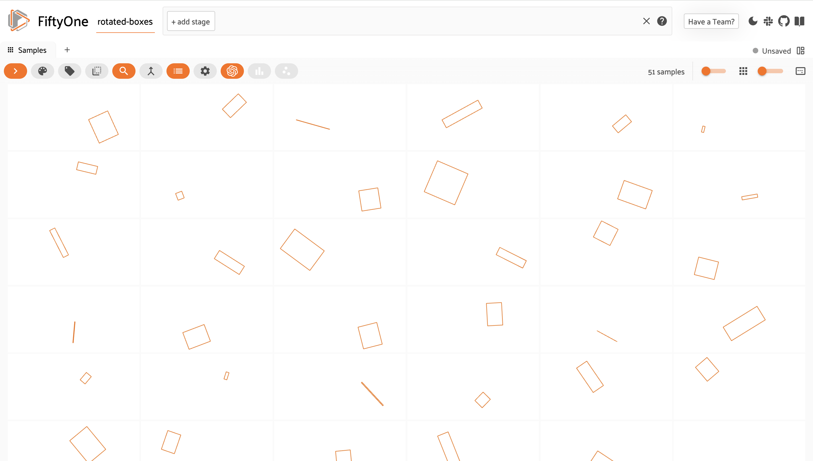
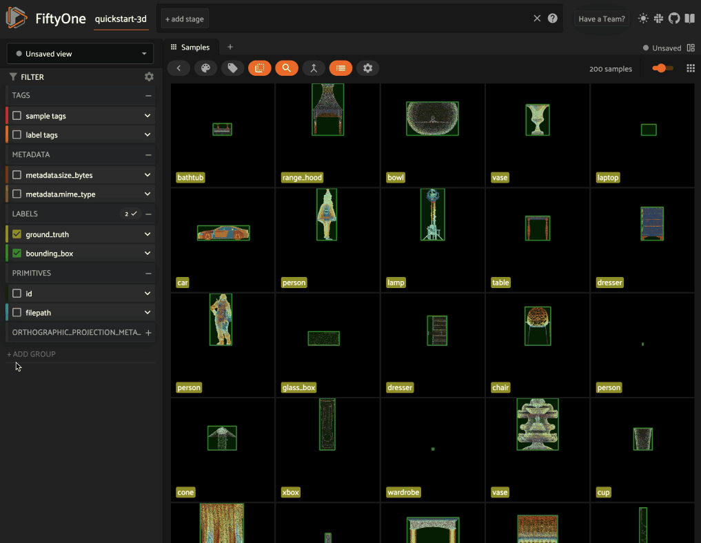

Using FiftyOne Datasets ¶¶
After a Dataset has been loaded or created, FiftyOne provides powerful
functionality to inspect, search, and modify it from a Dataset-wide down to
a Sample level.
The following sections provide details of how to use various aspects of a
FiftyOne Dataset.
Datasets ¶¶
Instantiating a Dataset object creates a new dataset.
import fiftyone as fo
dataset1 = fo.Dataset("my_first_dataset")
dataset2 = fo.Dataset("my_second_dataset")
dataset3 = fo.Dataset() # generates a default unique name
Check to see what datasets exist at any time via list_datasets():
print(fo.list_datasets())
# ['my_first_dataset', 'my_second_dataset', '2020.08.04.12.36.29']
Load a dataset using
load_dataset().
Dataset objects are singletons. Cool!
_dataset2 = fo.load_dataset("my_second_dataset")
_dataset2 is dataset2 # True
If you try to load a dataset via Dataset(...) or create a new dataset via
load_dataset() you’re going to
have a bad time:
_dataset2 = fo.Dataset("my_second_dataset")
# Dataset 'my_second_dataset' already exists; use `fiftyone.load_dataset()`
# to load an existing dataset
dataset4 = fo.load_dataset("my_fourth_dataset")
# DoesNotExistError: Dataset 'my_fourth_dataset' not found
Dataset media type ¶¶
The media type of a dataset is determined by the
media type of the Sample objects that it contains.
The media_type property of a
dataset is set based on the first sample added to it:
import fiftyone as fo
dataset = fo.Dataset()
print(dataset.media_type)
# None
sample = fo.Sample(filepath="/path/to/image.png")
dataset.add_sample(sample)
print(dataset.media_type)
# "image"
Note that datasets are homogeneous; they must contain samples of the same media type (except for grouped datasets):
sample = fo.Sample(filepath="/path/to/video.mp4")
dataset.add_sample(sample)
# MediaTypeError: Sample media type 'video' does not match dataset media type 'image'
The following media types are available:
| Media type | Description |
|---|---|
image |
Datasets that contain images |
video |
Datasets that contain videos |
3d |
Datasets that contain 3D scenes |
point-cloud |
Datasets that contain point clouds |
group |
Datasets that contain grouped data slices |
Dataset persistence ¶¶
By default, datasets are non-persistent. Non-persistent datasets are deleted from the database each time the database is shut down. Note that FiftyOne does not store the raw data in datasets directly (only the labels), so your source files on disk are untouched.
To make a dataset persistent, set its
persistent property to
True:
# Make the dataset persistent
dataset1.persistent = True
Without closing your current Python shell, open a new shell and run:
import fiftyone as fo
# Verify that both persistent and non-persistent datasets still exist
print(fo.list_datasets())
# ['my_first_dataset', 'my_second_dataset', '2020.08.04.12.36.29']
All three datasets are still available, since the database connection has not been terminated.
However, if you exit all processes with fiftyone imported, then open a new
shell and run the command again:
import fiftyone as fo
# Verify that non-persistent datasets have been deleted
print(fo.list_datasets())
# ['my_first_dataset']
you’ll see that the my_second_dataset and 2020.08.04.12.36.29 datasets have
been deleted because they were not persistent.
Dataset version ¶¶
The version of the fiftyone package for which a dataset is formatted is
stored in the version property
of the dataset.
If you upgrade your fiftyone package and then load a dataset that was created
with an older version of the package, it will be automatically migrated to the
new package version (if necessary) the first time you load it.
Dataset tags ¶¶
All Dataset instances have a
tags property that you can use to
store an arbitrary list of string tags.
import fiftyone as fo
dataset = fo.Dataset()
# Add some tags
dataset.tags = ["test", "projectA"]
# Edit the tags
dataset.tags.pop()
dataset.tags.append("projectB")
dataset.save() # must save after edits
Note
You must call
dataset.save() after updating
the dataset’s tags property
in-place to save the changes to the database.
Dataset stats ¶¶
You can use the stats() method on
a dataset to obtain information about the size of the dataset on disk,
including its metadata in the database and optionally the size of the physical
media on disk:
import fiftyone as fo
import fiftyone.zoo as foz
dataset = foz.load_zoo_dataset("quickstart")
fo.pprint(dataset.stats(include_media=True))
{
'samples_count': 200,
'samples_bytes': 1290762,
'samples_size': '1.2MB',
'media_bytes': 24412374,
'media_size': '23.3MB',
'total_bytes': 25703136,
'total_size': '24.5MB',
}
You can also invoke
stats() on a
dataset view to retrieve stats for a specific subset of
the dataset:
view = dataset[:10].select_fields("ground_truth")
fo.pprint(view.stats(include_media=True))
{
'samples_count': 10,
'samples_bytes': 10141,
'samples_size': '9.9KB',
'media_bytes': 1726296,
'media_size': '1.6MB',
'total_bytes': 1736437,
'total_size': '1.7MB',
}
Storing info ¶¶
All Dataset instances have an
info property, which contains a
dictionary that you can use to store any JSON-serializable information you wish
about your dataset.
Datasets can also store more specific types of ancillary information such as class lists and mask targets.
import fiftyone as fo
dataset = fo.Dataset()
# Store a class list in the dataset's info
dataset.info = {
"dataset_source": "https://...",
"author": "...",
}
# Edit existing info
dataset.info["owner"] = "..."
dataset.save() # must save after edits
Note
You must call
dataset.save() after updating
the dataset’s info property
in-place to save the changes to the database.
Dataset App config ¶¶
All Dataset instances have an
app_config property that
contains a DatasetAppConfig that you can use to store dataset-specific
settings that customize how the dataset is visualized in the
FiftyOne App.
import fiftyone as fo
import fiftyone.zoo as foz
dataset = foz.load_zoo_dataset("quickstart")
session = fo.launch_app(dataset)
# View the dataset's current App config
print(dataset.app_config)
Multiple media fields ¶¶
You can declare multiple media fields on a dataset and configure which field is used by various components of the App by default:
import fiftyone.utils.image as foui
# Generate some thumbnail images
foui.transform_images(
dataset,
size=(-1, 32),
output_field="thumbnail_path",
output_dir="/tmp/thumbnails",
)
# Configure when to use each field
dataset.app_config.media_fields = ["filepath", "thumbnail_path"]
dataset.app_config.grid_media_field = "thumbnail_path"
dataset.save() # must save after edits
session.refresh()
You can set media_fallback=True if you want the App to fallback to the
filepath field if an alternate media field is missing for a particular
sample in the grid and/or modal:
# Fallback to `filepath` if an alternate media field is missing
dataset.app_config.media_fallback = True
dataset.save()
Custom color scheme ¶¶
You can store a custom color scheme on a dataset that should be used by default whenever the dataset is loaded in the App:
dataset.evaluate_detections(
"predictions", gt_field="ground_truth", eval_key="eval"
)
# Store a custom color scheme
dataset.app_config.color_scheme = fo.ColorScheme(
color_pool=["#ff0000", "#00ff00", "#0000ff", "pink", "yellowgreen"],
color_by="value",
fields=[\
{\
"path": "ground_truth",\
"colorByAttribute": "eval",\
"valueColors": [\
{"value": "fn", "color": "#0000ff"}, # false negatives: blue\
{"value": "tp", "color": "#00ff00"}, # true positives: green\
]\
},\
{\
"path": "predictions",\
"colorByAttribute": "eval",\
"valueColors": [\
{"value": "fp", "color": "#ff0000"}, # false positives: red\
{"value": "tp", "color": "#00ff00"}, # true positives: green\
]\
}\
]
)
dataset.save() # must save after edits
# Setting `color_scheme` to None forces the dataset's default color scheme
# to be loaded
session.color_scheme = None
Note
Refer to the ColorScheme class for documentation of the available
customization options.
Note
Did you know? You can also configure color schemes directly in the App!
Sidebar groups ¶¶
You can configure the organization and default expansion state of the sidebar’s field groups:
# Get the default sidebar groups for the dataset
sidebar_groups = fo.DatasetAppConfig.default_sidebar_groups(dataset)
# Collapse the `metadata` section by default
print(sidebar_groups[2].name) # metadata
sidebar_groups[2].expanded = False
# Modify the dataset's App config
dataset.app_config.sidebar_groups = sidebar_groups
dataset.save() # must save after edits
session.refresh()
Disable frame filtering ¶¶
Filtering by frame-level fields of video datasets in the App’s grid view can be expensive when the dataset is large.
You can disable frame filtering for a video dataset as follows:
import fiftyone as fo
import fiftyone.zoo as foz
dataset = foz.load_zoo_dataset("quickstart-video")
dataset.app_config.disable_frame_filtering = True
dataset.save() # must save after edits
session = fo.launch_app(dataset)
Note
Did you know? You can also globally disable frame filtering for all video datasets via your App config.
Resetting a dataset’s App config ¶¶
You can conveniently reset any property of a dataset’s App config by setting it
to None:
# Reset the dataset's color scheme
dataset.app_config.color_scheme = None
dataset.save() # must save after edits
print(dataset.app_config)
session.refresh()
or you can reset the entire App config by setting the
app_config property to
None:
# Reset App config
dataset.app_config = None
print(dataset.app_config)
session = fo.launch_app(dataset)
Note
Check out this section for more information about customizing the behavior of the App.
Storing class lists ¶¶
All Dataset instances have
classes and
default_classes
properties that you can use to store the lists of possible classes for your
annotations/models.
The classes property is a
dictionary mapping field names to class lists for a single Label field of the
dataset.
If all Label fields in your dataset have the same semantics, you can store a
single class list in the store a single target dictionary in the
default_classes
property of your dataset.
You can also pass your class lists to methods such as
evaluate_classifications(),
evaluate_detections(),
and export() that
require knowledge of the possible classes in a dataset or field(s).
import fiftyone as fo
dataset = fo.Dataset()
# Set default classes
dataset.default_classes = ["cat", "dog"]
# Edit the default classes
dataset.default_classes.append("other")
dataset.save() # must save after edits
# Set classes for the `ground_truth` and `predictions` fields
dataset.classes = {
"ground_truth": ["cat", "dog"],
"predictions": ["cat", "dog", "other"],
}
# Edit a field's classes
dataset.classes["ground_truth"].append("other")
dataset.save() # must save after edits
Note
You must call
dataset.save() after updating
the dataset’s classes and
default_classes
properties in-place to save the changes to the database.
Storing mask targets ¶¶
All Dataset instances have
mask_targets and
default_mask_targets
properties that you can use to store label strings for the pixel values of
Segmentation field masks.
The mask_targets property
is a dictionary mapping field names to target dicts, each of which is a
dictionary defining the mapping between pixel values (2D masks) or RGB hex
strings (3D masks) and label strings for the Segmentation masks in the
specified field of the dataset.
If all Segmentation fields in your dataset have the same semantics, you can
store a single target dictionary in the
default_mask_targets
property of your dataset.
When you load datasets with Segmentation fields in the App that have
corresponding mask targets, the label strings will appear in the App’s tooltip
when you hover over pixels.
You can also pass your mask targets to methods such as
evaluate_segmentations()
and export() that
require knowledge of the mask targets for a dataset or field(s).
If you are working with 2D segmentation masks, specify target keys as integers:
import fiftyone as fo
dataset = fo.Dataset()
# Set default mask targets
dataset.default_mask_targets = {1: "cat", 2: "dog"}
# Edit the default mask targets
dataset.default_mask_targets[255] = "other"
dataset.save() # must save after edits
# Set mask targets for the `ground_truth` and `predictions` fields
dataset.mask_targets = {
"ground_truth": {1: "cat", 2: "dog"},
"predictions": {1: "cat", 2: "dog", 255: "other"},
}
# Edit an existing mask target
dataset.mask_targets["ground_truth"][255] = "other"
dataset.save() # must save after edits
If you are working with RGB segmentation masks, specify target keys as RGB hex strings:
import fiftyone as fo
dataset = fo.Dataset()
# Set default mask targets
dataset.default_mask_targets = {"#499CEF": "cat", "#6D04FF": "dog"}
# Edit the default mask targets
dataset.default_mask_targets["#FF6D04"] = "person"
dataset.save() # must save after edits
# Set mask targets for the `ground_truth` and `predictions` fields
dataset.mask_targets = {
"ground_truth": {"#499CEF": "cat", "#6D04FF": "dog"},
"predictions": {
"#499CEF": "cat", "#6D04FF": "dog", "#FF6D04": "person"
},
}
# Edit an existing mask target
dataset.mask_targets["ground_truth"]["#FF6D04"] = "person"
dataset.save() # must save after edits
Note
You must call
dataset.save() after updating
the dataset’s
mask_targets and
default_mask_targets
properties in-place to save the changes to the database.
Storing keypoint skeletons ¶¶
All Dataset instances have
skeletons and
default_skeleton
properties that you can use to store keypoint skeletons for Keypoint field(s)
of a dataset.
The skeletons property is a
dictionary mapping field names to KeypointSkeleton instances, each of which
defines the keypoint label strings and edge connectivity for the Keypoint
instances in the specified field of the dataset.
If all Keypoint fields in your dataset have the same semantics, you can store
a single KeypointSkeleton in the
default_skeleton
property of your dataset.
When you load datasets with Keypoint fields in the App that have
corresponding skeletons, the skeletons will automatically be rendered and label
strings will appear in the App’s tooltip when you hover over the keypoints.
Keypoint skeletons can be associated with Keypoint or Keypoints fields
whose points attributes all
contain a fixed number of semantically ordered points.
The edges argument
contains lists of integer indexes that define the connectivity of the points in
the skeleton, and the optional
labels argument
defines the label strings for each node in the skeleton.
For example, the skeleton below is defined by edges between the following nodes:
left hand <-> left shoulder <-> right shoulder <-> right hand
left eye <-> right eye <-> mouth
import fiftyone as fo
dataset = fo.Dataset()
# Set keypoint skeleton for the `ground_truth` field
dataset.skeletons = {
"ground_truth": fo.KeypointSkeleton(
labels=[\
"left hand" "left shoulder", "right shoulder", "right hand",\
"left eye", "right eye", "mouth",\
],
edges=[[0, 1, 2, 3], [4, 5, 6]],
)
}
# Edit an existing skeleton
dataset.skeletons["ground_truth"].labels[-1] = "lips"
dataset.save() # must save after edits
Note
When using keypoint skeletons, each Keypoint instance’s
points list must always
respect the indexing defined by the field’s KeypointSkeleton.
If a particular keypoint is occluded or missing for an object, use
[float("nan"), float("nan")] in its
points list.
Note
You must call
dataset.save() after updating
the dataset’s
skeletons and
default_skeleton
properties in-place to save the changes to the database.
Deleting a dataset ¶¶
Delete a dataset explicitly via
Dataset.delete(). Once a dataset
is deleted, any existing reference in memory will be in a volatile state.
Dataset.name and
Dataset.deleted will still be valid
attributes, but calling any other attribute or method will raise a
DoesNotExistError.
dataset = fo.load_dataset("my_first_dataset")
dataset.delete()
print(fo.list_datasets())
# []
print(dataset.name)
# my_first_dataset
print(dataset.deleted)
# True
print(dataset.persistent)
# DoesNotExistError: Dataset 'my_first_dataset' is deleted
Samples ¶¶
An individual Sample is always initialized with a filepath to the
corresponding data on disk.
# An image sample
sample = fo.Sample(filepath="/path/to/image.png")
# A video sample
another_sample = fo.Sample(filepath="/path/to/video.mp4")
Note
Creating a new Sample does not load the source data into memory. Source
data is read only as needed by the App.
Adding samples to a dataset ¶¶
A Sample can easily be added to an existing Dataset:
dataset = fo.Dataset("example_dataset")
dataset.add_sample(sample)
When a sample is added to a dataset, the relevant attributes of the Sample
are automatically updated:
print(sample.in_dataset)
# True
print(sample.dataset_name)
# example_dataset
Every sample in a dataset is given a unique ID when it is added:
print(sample.id)
# 5ee0ebd72ceafe13e7741c42
Multiple samples can be efficiently added to a dataset in batches:
print(len(dataset))
# 1
dataset.add_samples(
[\
fo.Sample(filepath="/path/to/image1.jpg"),\
fo.Sample(filepath="/path/to/image2.jpg"),\
fo.Sample(filepath="/path/to/image3.jpg"),\
]
)
print(len(dataset))
# 4
Accessing samples in a dataset ¶¶
FiftyOne provides multiple ways to access a Sample in a Dataset.
You can iterate over the samples in a dataset:
for sample in dataset:
print(sample)
Use first() and
last() to retrieve the first and
last samples in a dataset, respectively:
first_sample = dataset.first()
last_sample = dataset.last()
Samples can be accessed directly from datasets by their IDs or their filepaths.
Sample objects are singletons, so the same Sample instance is returned
whenever accessing the sample from the Dataset:
same_sample = dataset[sample.id]
print(same_sample is sample)
# True
also_same_sample = dataset[sample.filepath]
print(also_same_sample is sample)
# True
You can use dataset views to perform more sophisticated operations on samples like searching, filtering, sorting, and slicing.
Note
Accessing a sample by its integer index in a Dataset is not allowed. The
best practice is to lookup individual samples by ID or filepath, or use
array slicing to extract a range of samples, and iterate over samples in a
view.
dataset[0]
# KeyError: Accessing dataset samples by numeric index is not supported.
# Use sample IDs, filepaths, slices, boolean arrays, or a boolean ViewExpression instead
Deleting samples from a dataset ¶¶
Samples can be removed from a Dataset through their ID, either one at a time
or in batches via
delete_samples():
dataset.delete_samples(sample_id)
# equivalent to above
del dataset[sample_id]
dataset.delete_samples([sample_id1, sample_id2])
Samples can also be removed from a Dataset by passing Sample instance(s)
or DatasetView instances:
# Remove a random sample
sample = dataset.take(1).first()
dataset.delete_samples(sample)
# Remove 10 random samples
view = dataset.take(10)
dataset.delete_samples(view)
If a Sample object in memory is deleted from a dataset, it will revert to
a Sample that has not been added to a Dataset:
print(sample.in_dataset)
# False
print(sample.dataset_name)
# None
print(sample.id)
# None
Fields ¶¶
A Field is an attribute of a Sample that stores information about the
sample.
Fields can be dynamically created, modified, and deleted from samples on a
per-sample basis. When a new Field is assigned to a Sample in a Dataset,
it is automatically added to the dataset’s schema and thus accessible on all
other samples in the dataset.
If a field exists on a dataset but has not been set on a particular sample, its
value will be None.
Default sample fields ¶¶
By default, all Sample instances have the following fields:
| Field | Type | Default | Description |
|---|---|---|---|
id |
string | None |
The ID of the sample in its parent dataset, which is generated automatically when the sample is added to a dataset, or None if the sample doesnot belong to a dataset |
filepath |
string | REQUIRED | The path to the source data on disk. Must be provided at sample creation time |
media_type |
string | N/A | The media type of the sample. Computed automatically from the provided filepath |
tags |
list | [] |
A list of string tags for the sample |
metadata |
Metadata |
None |
Type-specific metadata about the source data |
created_at |
datetime | None |
The datetime that the sample was added to its parent dataset, which is generated automatically, or None if the sample does not belong to adataset |
last_modified_at |
datetime | None |
The datetime that the sample was last modified, which is updated automatically, or None if thesample does not belong to a dataset |
Note
The created_at and last_modified_at fields are
read-only and are automatically populated/updated
when you add samples to datasets and modify them, respectively.
import fiftyone as fo
sample = fo.Sample(filepath="/path/to/image.png")
print(sample)
<Sample: {
'id': None,
'media_type': 'image',
'filepath': '/path/to/image.png',
'tags': [],
'metadata': None,
'created_at': None,
'last_modified_at': None,
}>
Accessing fields of a sample ¶¶
The names of available fields can be checked on any individual Sample:
sample.field_names
# ('id', 'filepath', 'tags', 'metadata', 'created_at', 'last_modified_at')
The value of a Field for a given Sample can be accessed either by either
attribute or item access:
sample.filepath
sample["filepath"] # equivalent
Field schemas ¶¶
You can use
get_field_schema() to
retrieve detailed information about the schema of the samples in a dataset:
dataset = fo.Dataset("a_dataset")
dataset.add_sample(sample)
dataset.get_field_schema()
OrderedDict([\
('id', <fiftyone.core.fields.ObjectIdField at 0x7fbaa862b358>),\
('filepath', <fiftyone.core.fields.StringField at 0x11c77ae10>),\
('tags', <fiftyone.core.fields.ListField at 0x11c790828>),\
('metadata', <fiftyone.core.fields.EmbeddedDocumentField at 0x11c7907b8>),\
('created_at', <fiftyone.core.fields.DateTimeField at 0x7fea48361af0>),\
('last_modified_at', <fiftyone.core.fields.DateTimeField at 0x7fea48361b20>)]),
])
You can also view helpful information about a dataset, including its schema, by printing it:
print(dataset)
Name: a_dataset
Media type: image
Num samples: 1
Persistent: False
Tags: []
Sample fields:
id: fiftyone.core.fields.ObjectIdField
filepath: fiftyone.core.fields.StringField
tags: fiftyone.core.fields.ListField(fiftyone.core.fields.StringField)
metadata: fiftyone.core.fields.EmbeddedDocumentField(fiftyone.core.metadata.ImageMetadata)
created_at: fiftyone.core.fields.DateTimeField
last_modified_at: fiftyone.core.fields.DateTimeField
Note
Did you know? You can store metadata such as descriptions on your dataset’s fields!
Adding fields to a sample ¶¶
New fields can be added to a Sample using item assignment:
sample["integer_field"] = 51
sample.save()
If the Sample belongs to a Dataset, the dataset’s schema will automatically
be updated to reflect the new field:
print(dataset)
Name: a_dataset
Media type: image
Num samples: 1
Persistent: False
Tags: []
Sample fields:
id: fiftyone.core.fields.ObjectIdField
filepath: fiftyone.core.fields.StringField
tags: fiftyone.core.fields.ListField(fiftyone.core.fields.StringField)
metadata: fiftyone.core.fields.EmbeddedDocumentField(fiftyone.core.metadata.ImageMetadata)
created_at: fiftyone.core.fields.DateTimeField
last_modified_at: fiftyone.core.fields.DateTimeField
integer_field: fiftyone.core.fields.IntField
A Field can be any primitive type, such as bool, int, float, str,
date, datetime, list, dict, or more complex data structures
like label types:
sample["animal"] = fo.Classification(label="alligator")
sample.save()
Whenever a new field is added to a sample in a dataset, the field is available
on every other sample in the dataset with the value None.
Fields must have the same type (or None) across all samples in the dataset.
Setting a field to an inappropriate type raises an error:
sample2.integer_field = "a string"
sample2.save()
# ValidationError: a string could not be converted to int
Note
You must call sample.save() in
order to persist changes to the database when editing samples that are in
datasets.
Adding fields to a dataset ¶¶
You can also use
add_sample_field() to
declare new sample fields directly on datasets without explicitly populating
any values on its samples:
import fiftyone as fo
sample = fo.Sample(
filepath="image.jpg",
ground_truth=fo.Classification(label="cat"),
)
dataset = fo.Dataset()
dataset.add_sample(sample)
# Declare new primitive fields
dataset.add_sample_field("scene_id", fo.StringField)
dataset.add_sample_field("quality", fo.FloatField)
# Declare untyped list fields
dataset.add_sample_field("more_tags", fo.ListField)
dataset.add_sample_field("info", fo.ListField)
# Declare a typed list field
dataset.add_sample_field("also_tags", fo.ListField, subfield=fo.StringField)
# Declare a new Label field
dataset.add_sample_field(
"predictions",
fo.EmbeddedDocumentField,
embedded_doc_type=fo.Classification,
)
print(dataset.get_field_schema())
{
'id': <fiftyone.core.fields.ObjectIdField object at 0x7f9280803910>,
'filepath': <fiftyone.core.fields.StringField object at 0x7f92d273e0d0>,
'tags': <fiftyone.core.fields.ListField object at 0x7f92d2654f70>,
'metadata': <fiftyone.core.fields.EmbeddedDocumentField object at 0x7f9280803d90>,
'created_at': <fiftyone.core.fields.DateTimeField object at 0x7fea48361af0>,
'last_modified_at': <fiftyone.core.fields.DateTimeField object at 0x7fea48361b20>,
'ground_truth': <fiftyone.core.fields.EmbeddedDocumentField object at 0x7f92d2605190>,
'scene_id': <fiftyone.core.fields.StringField object at 0x7f9280803490>,
'quality': <fiftyone.core.fields.FloatField object at 0x7f92d2605bb0>,
'more_tags': <fiftyone.core.fields.ListField object at 0x7f92d08e4550>,
'info': <fiftyone.core.fields.ListField object at 0x7f92d264f9a0>,
'also_tags': <fiftyone.core.fields.ListField object at 0x7f92d264ff70>,
'predictions': <fiftyone.core.fields.EmbeddedDocumentField object at 0x7f92d2605640>,
}
Whenever a new field is added to a dataset, the field is immediately available
on all samples in the dataset with the value None:
print(sample)
<Sample: {
'id': '642d8848f291652133df8d3a',
'media_type': 'image',
'filepath': '/Users/Brian/dev/fiftyone/image.jpg',
'tags': [],
'metadata': None,
'created_at': datetime.datetime(2024, 7, 22, 5, 0, 25, 372399),
'last_modified_at': datetime.datetime(2024, 7, 22, 5, 0, 25, 372399),
'ground_truth': <Classification: {
'id': '642d8848f291652133df8d38',
'tags': [],
'label': 'cat',
'confidence': None,
'logits': None,
}>,
'scene_id': None,
'quality': None,
'more_tags': None,
'info': None,
'also_tags': None,
'predictions': None,
}>
You can also declare nested fields on existing embedded documents using dot notation:
# Declare a new attribute on a `Classification` field
dataset.add_sample_field("predictions.breed", fo.StringField)
Note
See this section for more options for dynamically expanding the schema of nested lists and embedded documents.
You can use get_field() to
retrieve a Field instance by its name or embedded.field.name. And, if the
field contains an embedded document, you can call
get_field_schema()
to recursively inspect its nested fields:
field = dataset.get_field("predictions")
print(field.document_type)
# <class 'fiftyone.core.labels.Classification'>
print(set(field.get_field_schema().keys()))
# {'logits', 'confidence', 'breed', 'tags', 'label', 'id'}
# Directly retrieve a nested field
field = dataset.get_field("predictions.breed")
print(type(field))
# <class 'fiftyone.core.fields.StringField'>
If your dataset contains a ListField with no value type declared, you can add
the type later by appending [] to the field path:
field = dataset.get_field("more_tags")
print(field.field) # None
# Declare the subfield types of an existing untyped list field
dataset.add_sample_field("more_tags[]", fo.StringField)
field = dataset.get_field("more_tags")
print(field.field) # StringField
# List fields can also contain embedded documents
dataset.add_sample_field(
"info[]",
fo.EmbeddedDocumentField,
embedded_doc_type=fo.DynamicEmbeddedDocument,
)
field = dataset.get_field("info")
print(field.field) # EmbeddedDocumentField
print(field.field.document_type) # DynamicEmbeddedDocument
Note
Declaring the value type of list fields is required if you want to filter by the list’s values in the App.
Editing sample fields ¶¶
You can make any edits you wish to the fields of an existing Sample:
sample = fo.Sample(
filepath="/path/to/image.jpg",
ground_truth=fo.Detections(
detections=[\
fo.Detection(label="CAT", bounding_box=[0.1, 0.1, 0.4, 0.4]),\
fo.Detection(label="dog", bounding_box=[0.5, 0.5, 0.4, 0.4]),\
]
)
)
detections = sample.ground_truth.detections
# Edit an existing detection
detections[0].label = "cat"
# Add a new detection
new_detection = fo.Detection(label="animals", bounding_box=[0, 0, 1, 1])
detections.append(new_detection)
print(sample)
sample.save() # if the sample is in a dataset
Note
You must call sample.save() in
order to persist changes to the database when editing samples that are in
datasets.
A common workflow is to iterate over a dataset or view and edit each sample:
for sample in dataset:
sample["new_field"] = ...
sample.save()
The iter_samples() method
is an equivalent way to iterate over a dataset that provides a
progress=True option that prints a progress bar tracking the status of the
iteration:
# Prints a progress bar tracking the status of the iteration
for sample in dataset.iter_samples(progress=True):
sample["new_field"] = ...
sample.save()
The iter_samples() method
also provides an autosave=True option that causes all changes to samples
emitted by the iterator to be automatically saved using efficient batch
updates:
# Automatically saves sample edits in efficient batches
for sample in dataset.iter_samples(autosave=True):
sample["new_field"] = ...
Using autosave=True can significantly improve performance when editing
large datasets. See this section for more information
on batch update patterns.
Removing fields from a sample ¶¶
A field can be deleted from a Sample using del:
del sample["integer_field"]
If the Sample is not yet in a dataset, deleting a field will remove it from
the sample. If the Sample is in a dataset, the field’s value will be None.
Fields can also be deleted at the Dataset level, in which case they are
removed from every Sample in the dataset:
dataset.delete_sample_field("integer_field")
sample.integer_field
# AttributeError: Sample has no field 'integer_field'
Storing field metadata ¶¶
You can store metadata such as descriptions and other info on the fields of your dataset.
One approach is to manually declare the field with
add_sample_field()
with the appropriate metadata provided:
import fiftyone as fo
dataset = fo.Dataset()
dataset.add_sample_field(
"int_field", fo.IntField, description="An integer field"
)
field = dataset.get_field("int_field")
print(field.description) # An integer field
You can also use
get_field() to
retrieve a field and update it’s metadata at any time:
import fiftyone as fo
import fiftyone.zoo as foz
dataset = foz.load_zoo_dataset("quickstart")
dataset.add_dynamic_sample_fields()
field = dataset.get_field("ground_truth")
field.description = "Ground truth annotations"
field.info = {"url": "https://fiftyone.ai"}
field.save() # must save after edits
field = dataset.get_field("ground_truth.detections.area")
field.description = "Area of the box, in pixels^2"
field.info = {"url": "https://fiftyone.ai"}
field.save() # must save after edits
dataset.reload()
field = dataset.get_field("ground_truth")
print(field.description) # Ground truth annotations
print(field.info) # {'url': 'https://fiftyone.ai'}
field = dataset.get_field("ground_truth.detections.area")
print(field.description) # Area of the box, in pixels^2
print(field.info) # {'url': 'https://fiftyone.ai'}
Note
You must call
field.save() after updating
a fields’s description
and info attributes in-place to
save the changes to the database.
Note
Did you know? You can view field metadata directly in the App by hovering over fields or attributes in the sidebar!
Read-only fields ¶¶
Certain default sample fields like created_at
and last_modified_at are read-only and thus cannot be manually edited:
from datetime import datetime
import fiftyone as fo
sample = fo.Sample(filepath="/path/to/image.jpg")
dataset = fo.Dataset()
dataset.add_sample(sample)
sample.created_at = datetime.utcnow()
# ValueError: Cannot edit read-only field 'created_at'
sample.last_modified_at = datetime.utcnow()
# ValueError: Cannot edit read-only field 'last_modified_at'
You can also manually mark additional fields or embedded fields as read-only at any time:
import fiftyone as fo
import fiftyone.zoo as foz
dataset = foz.load_zoo_dataset("quickstart")
# Declare a new read-only field
dataset.add_sample_field("uuid", fo.StringField, read_only=True)
# Mark 'filepath' as read-only
field = dataset.get_field("filepath")
field.read_only = True
field.save() # must save after edits
# Mark a nested field as read-only
field = dataset.get_field("ground_truth.detections.label")
field.read_only = True
field.save() # must save after edits
sample = dataset.first()
sample.filepath = "no.jpg"
# ValueError: Cannot edit read-only field 'filepath'
sample.ground_truth.detections[0].label = "no"
sample.save()
# ValueError: Cannot edit read-only field 'ground_truth.detections.label'
Note
You must call
field.save() after updating
a fields’s read_only
attributes in-place to save the changes to the database.
Note that read-only fields do not interfere with the ability to add/delete samples from datasets:
sample = fo.Sample(filepath="/path/to/image.jpg", uuid="1234")
dataset.add_sample(sample)
dataset.delete_samples(sample)
Any fields that you’ve manually marked as read-only may be reverted to editable at any time:
sample = dataset.first()
# Revert 'filepath' to editable
field = dataset.get_field("filepath")
field.read_only = False
field.save() # must save after edits
# Revert nested field to editable
field = dataset.get_field("ground_truth.detections.label")
field.read_only = False
field.save() # must save after edits
sample.filepath = "yes.jpg"
sample.ground_truth.detections[0].label = "yes"
sample.save()
Summary fields ¶¶
Summary fields allow you to efficiently perform queries on large datasets where directly querying the underlying field is prohibitively slow due to the number of objects/frames in the field.
For example, suppose you’re working on a
video dataset with frame-level objects, and you’re
interested in finding videos that contain specific classes of interest, eg
person, in at least one frame:
import fiftyone as fo
import fiftyone.zoo as foz
from fiftyone import ViewField as F
dataset = foz.load_zoo_dataset("quickstart-video")
dataset.set_field("frames.detections.detections.confidence", F.rand()).save()
session = fo.launch_app(dataset)

One approach is to directly query the frame-level field ( frames.detections
in this case) in the App’s sidebar. However, when the dataset is large, such
queries are inefficient, as they cannot unlock
query performance and thus require
full collection scans over all frames to retrieve the relevant samples.
A more efficient approach is to first use
create_summary_field()
to summarize the relevant input field path(s):
# Generate a summary field for object labels
field_name = dataset.create_summary_field("frames.detections.detections.label")
# The name of the summary field that was created
print(field_name)
# 'frames_detections_label'
# Generate a summary field for [min, max] confidences
dataset.create_summary_field("frames.detections.detections.confidence")
Summary fields can be generated for sample-level and frame-level fields, and the input fields can be either categorical or numeric:
As the above examples illustrate, summary fields allow you to encode various types of information at the sample-level that you can directly query to find samples that contain specific values.
Moreover, summary fields are indexed by default and the App can natively leverage these indexes to provide performant filtering:

Note
Summary fields are automatically added to a summaries sidebar group in the App for
easy access and organization.
They are also read-only by default, as they are implicitly derived from the contents of their source field and are not intended to be directly modified.
You can use
list_summary_fields()
to list the names of the summary fields on your dataset:
print(dataset.list_summary_fields())
# ['frames_detections_label', 'frames_detections_confidence', ...]
Since a summary field is derived from the contents of another field, it must be
updated whenever there have been modifications to its source field. You can use
check_summary_fields()
to check for summary fields that may need to be updated:
# Newly created summary fields don't needed updating
print(dataset.check_summary_fields())
# []
# Modify the dataset
label_upper = F("label").upper()
dataset.set_field("frames.detections.detections.label", label_upper).save()
# Summary fields now (may) need updating
print(dataset.check_summary_fields())
# ['frames_detections_label', 'frames_detections_confidence', ...]
Note
Note that inclusion in
check_summary_fields()
is only a heuristic, as any sample modifications may not have affected
the summary’s source field.
Use update_summary_field()
to regenerate a summary field based on the current values of its source field:
dataset.update_summary_field("frames_detections_label")
Finally, use
delete_summary_field()
or delete_summary_fields()
to delete existing summary field(s) that you no longer need:
dataset.delete_summary_field("frames_detections_label")
Media type ¶¶
When a Sample is created, its media type is inferred from the filepath to
the source media and available via the media_type attribute of the sample,
which is read-only.
Media type is inferred from the MIME type of the file on disk, as per the table below:
| MIME type/extension | media_type |
Description |
|---|---|---|
image/* |
image |
Image sample |
video/* |
video |
Video sample |
*.fo3d |
3d |
3D sample |
*.pcd |
point-cloud |
Point cloud sample |
| other | - |
Generic sample |
Note
The filepath of a sample can be changed after the sample is created, but
the new filepath must have the same media type. In other words,
media_type is immutable.
Tags ¶¶
All Sample instances have a tags field, which is a string list. By default,
this list is empty, but you can use it to store information like dataset splits
or application-specific issues like low quality images:
dataset = fo.Dataset("tagged_dataset")
dataset.add_samples(
[\
fo.Sample(filepath="/path/to/image1.png", tags=["train"]),\
fo.Sample(filepath="/path/to/image2.png", tags=["test", "low_quality"]),\
]
)
print(dataset.distinct("tags"))
# ["test", "low_quality", "train"]
Note
Did you know? You can add, edit, and filter by sample tags directly in the App.
The tags field can be used like a standard Python list:
sample = dataset.first()
sample.tags.append("new_tag")
sample.save()
Note
You must call sample.save() in
order to persist changes to the database when editing samples that are in
datasets.
Datasets and views provide helpful methods such as
count_sample_tags(),
tag_samples(),
untag_samples(),
and
match_tags()
that you can use to perform batch queries and edits to sample tags:
import fiftyone as fo
import fiftyone.zoo as foz
dataset = foz.load_zoo_dataset("quickstart").clone()
print(dataset.count_sample_tags()) # {'validation': 200}
# Tag samples in a view
test_view = dataset.limit(100)
test_view.untag_samples("validation")
test_view.tag_samples("test")
print(dataset.count_sample_tags()) # {'validation': 100, 'test': 100}
# Create a view containing samples with a specific tag
validation_view = dataset.match_tags("validation")
print(len(validation_view)) # 100
Metadata ¶¶
All Sample instances have a metadata field, which can optionally be
populated with a Metadata instance that stores data type-specific metadata
about the raw data in the sample. The FiftyOne App and
the FiftyOne Brain will use this provided metadata in
some workflows when it is available.
Dates and datetimes ¶¶
You can store date information in FiftyOne datasets by populating fields with
date or datetime values:
from datetime import date, datetime
import fiftyone as fo
dataset = fo.Dataset()
dataset.add_samples(
[\
fo.Sample(\
filepath="image1.png",\
acquisition_time=datetime(2021, 8, 24, 21, 18, 7),\
acquisition_date=date(2021, 8, 24),\
),\
fo.Sample(\
filepath="image2.png",\
acquisition_time=datetime.utcnow(),\
acquisition_date=date.today(),\
),\
]
)
print(dataset)
print(dataset.head())
Note
Did you know? You can create dataset views with date-based queries!
Internally, FiftyOne stores all dates as UTC timestamps, but you can provide
any valid datetime object when setting a DateTimeField of a sample,
including timezone-aware datetimes, which are internally converted to UTC
format for safekeeping.
# A datetime in your local timezone
now = datetime.utcnow().astimezone()
sample = fo.Sample(filepath="image.png", acquisition_time=now)
dataset = fo.Dataset()
dataset.add_sample(sample)
# Samples are singletons, so we reload so `sample` will contain values as
# loaded from the database
dataset.reload()
sample.acquisition_time.tzinfo # None
By default, when you access a datetime field of a sample in a dataset, it is
retrieved as a naive datetime instance expressed in UTC format.
However, if you prefer, you can
configure FiftyOne to load datetime fields as
timezone-aware datetime instances in a timezone of your choice.
Warning
FiftyOne assumes that all datetime instances with no explicit timezone
are stored in UTC format.
Therefore, never use datetime.datetime.now() when populating a datetime
field of a FiftyOne dataset! Instead, use datetime.datetime.utcnow().
Labels ¶¶
The Label class hierarchy is used to store semantic information about ground
truth or predicted labels in a sample.
Although such information can be stored in custom sample fields
(e.g, in a DictField), it is recommended that you store label information in
Label instances so that the FiftyOne App and the
FiftyOne Brain can visualize and compute on your
labels.
Note
All Label instances are dynamic! You can add custom fields to your
labels to store custom information:
# Provide some default fields
label = fo.Classification(label="cat", confidence=0.98)
# Add custom fields
label["int"] = 5
label["float"] = 51.0
label["list"] = [1, 2, 3]
label["bool"] = True
label["dict"] = {"key": ["list", "of", "values"]}
You can also declare dynamic attributes on your dataset’s schema, which allows you to enforce type constraints, filter by these custom attributes in the App, and more.
FiftyOne provides a dedicated Label subclass for many common tasks. The
subsections below describe them.
Regression ¶¶
The Regression class represents a numeric regression value for an image. The
value itself is stored in the
value attribute of the
Regression object. This may be a ground truth value or a model prediction.
The optional
confidence attribute can
be used to store a score associated with the model prediction and can be
visualized in the App or used, for example, when
evaluating regressions.
import fiftyone as fo
sample = fo.Sample(filepath="/path/to/image.png")
sample["ground_truth"] = fo.Regression(value=51.0)
sample["prediction"] = fo.Classification(value=42.0, confidence=0.9)
print(sample)
<Sample: {
'id': None,
'media_type': 'image',
'filepath': '/path/to/image.png',
'tags': [],
'metadata': None,
'created_at': None,
'last_modified_at': None,
'ground_truth': <Regression: {
'id': '616c4bef36297ec40a26d112',
'tags': [],
'value': 51.0,
'confidence': None,
}>,
'prediction': <Classification: {
'id': '616c4bef36297ec40a26d113',
'tags': [],
'label': None,
'confidence': 0.9,
'logits': None,
'value': 42.0,
}>,
}>
Classification ¶¶
The Classification class represents a classification label for an image. The
label itself is stored in the
label attribute of the
Classification object. This may be a ground truth label or a model
prediction.
The optional
confidence and
logits attributes may be
used to store metadata about the model prediction. These additional fields can
be visualized in the App or used by Brain methods, e.g., when
computing label mistakes.
import fiftyone as fo
sample = fo.Sample(filepath="/path/to/image.png")
sample["ground_truth"] = fo.Classification(label="sunny")
sample["prediction"] = fo.Classification(label="sunny", confidence=0.9)
print(sample)
<Sample: {
'id': None,
'media_type': 'image',
'filepath': '/path/to/image.png',
'tags': [],
'metadata': None,
'created_at': None,
'last_modified_at': None,
'ground_truth': <Classification: {
'id': '5f8708db2018186b6ef66821',
'label': 'sunny',
'confidence': None,
'logits': None,
}>,
'prediction': <Classification: {
'id': '5f8708db2018186b6ef66822',
'label': 'sunny',
'confidence': 0.9,
'logits': None,
}>,
}>
Note
Did you know? You can store class lists for your models on your datasets.
Multilabel classification ¶¶
The Classifications class represents a list of classification labels for an
image. The typical use case is to represent multilabel annotations/predictions
for an image, where multiple labels from a model may apply to a given image.
The labels are stored in a
classifications
attribute of the object, which contains a list of Classification instances.
Metadata about individual labels can be stored in the Classification
instances as usual; additionally, you can optionally store logits for the
overarching model (if applicable) in the
logits attribute of the
Classifications object.
import fiftyone as fo
sample = fo.Sample(filepath="/path/to/image.png")
sample["ground_truth"] = fo.Classifications(
classifications=[\
fo.Classification(label="animal"),\
fo.Classification(label="cat"),\
fo.Classification(label="tabby"),\
]
)
sample["prediction"] = fo.Classifications(
classifications=[\
fo.Classification(label="animal", confidence=0.99),\
fo.Classification(label="cat", confidence=0.98),\
fo.Classification(label="tabby", confidence=0.72),\
]
)
print(sample)
<Sample: {
'id': None,
'media_type': 'image',
'filepath': '/path/to/image.png',
'tags': [],
'metadata': None,
'created_at': None,
'last_modified_at': None,
'ground_truth': <Classifications: {
'classifications': [\
<Classification: {\
'id': '5f8708f62018186b6ef66823',\
'label': 'animal',\
'confidence': None,\
'logits': None,\
}>,\
<Classification: {\
'id': '5f8708f62018186b6ef66824',\
'label': 'cat',\
'confidence': None,\
'logits': None,\
}>,\
<Classification: {\
'id': '5f8708f62018186b6ef66825',\
'label': 'tabby',\
'confidence': None,\
'logits': None,\
}>,\
],
'logits': None,
}>,
'prediction': <Classifications: {
'classifications': [\
<Classification: {\
'id': '5f8708f62018186b6ef66826',\
'label': 'animal',\
'confidence': 0.99,\
'logits': None,\
}>,\
<Classification: {\
'id': '5f8708f62018186b6ef66827',\
'label': 'cat',\
'confidence': 0.98,\
'logits': None,\
}>,\
<Classification: {\
'id': '5f8708f62018186b6ef66828',\
'label': 'tabby',\
'confidence': 0.72,\
'logits': None,\
}>,\
],
'logits': None,
}>,
}>
Note
Did you know? You can store class lists for your models on your datasets.
Object detection ¶¶
The Detections class represents a list of object detections in an image. The
detections are stored in the
detections attribute of
the Detections object.
Each individual object detection is represented by a Detection object. The
string label of the object should be stored in the
label attribute, and the
bounding box for the object should be stored in the
bounding_box attribute.
Note
FiftyOne stores box coordinates as floats in [0, 1] relative to the
dimensions of the image. Bounding boxes are represented by a length-4 list
in the format:
[<top-left-x>, <top-left-y>, <width>, <height>]
Note
Did you know? FiftyOne also supports 3D detections!
In the case of model predictions, an optional confidence score for each
detection can be stored in the
confidence attribute.
import fiftyone as fo
sample = fo.Sample(filepath="/path/to/image.png")
sample["ground_truth"] = fo.Detections(
detections=[fo.Detection(label="cat", bounding_box=[0.5, 0.5, 0.4, 0.3])]
)
sample["prediction"] = fo.Detections(
detections=[\
fo.Detection(\
label="cat",\
bounding_box=[0.480, 0.513, 0.397, 0.288],\
confidence=0.96,\
),\
]
)
print(sample)
<Sample: {
'id': None,
'media_type': 'image',
'filepath': '/path/to/image.png',
'tags': [],
'metadata': None,
'created_at': None,
'last_modified_at': None,
'ground_truth': <Detections: {
'detections': [\
<Detection: {\
'id': '5f8709172018186b6ef66829',\
'attributes': {},\
'label': 'cat',\
'bounding_box': [0.5, 0.5, 0.4, 0.3],\
'mask': None,\
'confidence': None,\
'index': None,\
}>,\
],
}>,
'prediction': <Detections: {
'detections': [\
<Detection: {\
'id': '5f8709172018186b6ef6682a',\
'attributes': {},\
'label': 'cat',\
'bounding_box': [0.48, 0.513, 0.397, 0.288],\
'mask': None,\
'confidence': 0.96,\
'index': None,\
}>,\
],
}>,
}>
Note
Did you know? You can store class lists for your models on your datasets.
Like all Label types, you can also add custom attributes to your detections
by dynamically adding new fields to each Detection instance:
import fiftyone as fo
detection = fo.Detection(
label="cat",
bounding_box=[0.5, 0.5, 0.4, 0.3],
age=51, # custom attribute
mood="salty", # custom attribute
)
print(detection)
<Detection: {
'id': '60f7458c467d81f41c200551',
'attributes': {},
'tags': [],
'label': 'cat',
'bounding_box': [0.5, 0.5, 0.4, 0.3],
'mask': None,
'confidence': None,
'index': None,
'age': 51,
'mood': 'salty',
}>
Note
Did you know? You can view custom attributes in the App tooltip by hovering over the objects.
Instance segmentations ¶¶
Object detections stored in Detections may also have instance segmentation
masks.
These masks can be stored in one of two ways: either directly in the database
via the mask attribute, or on
disk referenced by the
mask_path attribute.
Masks stored directly in the database must be 2D numpy arrays
containing either booleans or 0/1 integers that encode the extent of the
instance mask within the
bounding_box of the
object.
For masks stored on disk, the
mask_path attribute should
contain the file path to the mask image. We recommend storing masks as
single-channel PNG images, where a pixel value of 0 indicates the
background (rendered as transparent in the App), and any other
value indicates the object.
Masks can be of any size; they are stretched as necessary to fill the object’s bounding box when visualizing in the App.
import numpy as np
from PIL import Image
import fiftyone as fo
# Example instance mask
mask = ((np.random.randn(32, 32) > 0) * 255).astype(np.uint8)
mask_path = "/path/to/mask.png"
Image.fromarray(mask).save(mask_path)
sample = fo.Sample(filepath="/path/to/image.png")
sample["prediction"] = fo.Detections(
detections=[\
fo.Detection(\
label="cat",\
bounding_box=[0.480, 0.513, 0.397, 0.288],\
mask_path=mask_path,\
confidence=0.96,\
),\
]
)
print(sample)
<Sample: {
'id': None,
'media_type': 'image',
'filepath': '/path/to/image.png',
'tags': [],
'metadata': None,
'created_at': None,
'last_modified_at': None,
'prediction': <Detections: {
'detections': [\
<Detection: {\
'id': '5f8709282018186b6ef6682b',\
'attributes': {},\
'tags': [],\
'label': 'cat',\
'bounding_box': [0.48, 0.513, 0.397, 0.288],\
'mask': None,\
'mask_path': '/path/to/mask.png',\
'confidence': 0.96,\
'index': None,\
}>,\
],
}>,
}>
Like all Label types, you can also add custom attributes to your instance
segmentations by dynamically adding new fields to each Detection instance:
import numpy as np
import fiftyone as fo
detection = fo.Detection(
label="cat",
bounding_box=[0.5, 0.5, 0.4, 0.3],
mask_path="/path/to/mask.png",
age=51, # custom attribute
mood="salty", # custom attribute
)
print(detection)
<Detection: {
'id': '60f74568467d81f41c200550',
'attributes': {},
'tags': [],
'label': 'cat',
'bounding_box': [0.5, 0.5, 0.4, 0.3],
'mask_path': '/path/to/mask.png',
'confidence': None,
'index': None,
'age': 51,
'mood': 'salty',
}>
Note
Did you know? You can view custom attributes in the App tooltip by hovering over the objects.
Polylines and polygons ¶¶
The Polylines class represents a list of
polylines or
polygons in an image. The polylines
are stored in the
polylines attribute of the
Polylines object.
Each individual polyline is represented by a Polyline object, which
represents a set of one or more semantically related shapes in an image. The
points attribute contains a
list of lists of (x, y) coordinates defining the vertices of each shape
in the polyline. If the polyline represents a closed curve, you can set the
closed attribute to True to
indicate that a line segment should be drawn from the last vertex to the first
vertex of each shape in the polyline. If the shapes should be filled when
rendering them, you can set the
filled attribute to True.
Polylines can also have string labels, which are stored in their
label attribute.
Note
FiftyOne stores vertex coordinates as floats in [0, 1] relative to the
dimensions of the image.
Note
Did you know? FiftyOne also supports 3D polylines!
import fiftyone as fo
sample = fo.Sample(filepath="/path/to/image.png")
# A simple polyline
polyline1 = fo.Polyline(
points=[[(0.3, 0.3), (0.7, 0.3), (0.7, 0.3)]],
closed=False,
filled=False,
)
# A closed, filled polygon with a label
polyline2 = fo.Polyline(
label="triangle",
points=[[(0.1, 0.1), (0.3, 0.1), (0.3, 0.3)]],
closed=True,
filled=True,
)
sample["polylines"] = fo.Polylines(polylines=[polyline1, polyline2])
print(sample)
<Sample: {
'id': None,
'media_type': 'image',
'filepath': '/path/to/image.png',
'tags': [],
'metadata': None,
'created_at': None,
'last_modified_at': None,
'polylines': <Polylines: {
'polylines': [\
<Polyline: {\
'id': '5f87094e2018186b6ef6682e',\
'attributes': {},\
'label': None,\
'points': [[(0.3, 0.3), (0.7, 0.3), (0.7, 0.3)]],\
'index': None,\
'closed': False,\
'filled': False,\
}>,\
<Polyline: {\
'id': '5f87094e2018186b6ef6682f',\
'attributes': {},\
'label': 'triangle',\
'points': [[(0.1, 0.1), (0.3, 0.1), (0.3, 0.3)]],\
'index': None,\
'closed': True,\
'filled': True,\
}>,\
],
}>,
}>
Like all Label types, you can also add custom attributes to your polylines by
dynamically adding new fields to each Polyline instance:
import fiftyone as fo
polyline = fo.Polyline(
label="triangle",
points=[[(0.1, 0.1), (0.3, 0.1), (0.3, 0.3)]],
closed=True,
filled=True,
kind="right", # custom attribute
)
print(polyline)
<Polyline: {
'id': '60f746b4467d81f41c200555',
'attributes': {},
'tags': [],
'label': 'triangle',
'points': [[(0.1, 0.1), (0.3, 0.1), (0.3, 0.3)]],
'confidence': None,
'index': None,
'closed': True,
'filled': True,
'kind': 'right',
}>
Note
Did you know? You can view custom attributes in the App tooltip by hovering over the objects.
Cuboids ¶¶
You can store and visualize cuboids in FiftyOne using the
Polyline.from_cuboid()
method.
The method accepts a list of 8 (x, y) points describing the vertices of the
cuboid in the format depicted below:
7--------6
/| /|
/ | / |
3--------2 |
| 4-----|--5
| / | /
|/ |/
0--------1
Note
FiftyOne stores vertex coordinates as floats in [0, 1] relative to the
dimensions of the image.
import cv2
import numpy as np
import fiftyone as fo
def random_cuboid(frame_size):
width, height = frame_size
x0, y0 = np.array([width, height]) * ([0, 0.2] + 0.8 * np.random.rand(2))
dx, dy = (min(0.8 * width - x0, y0 - 0.2 * height)) * np.random.rand(2)
x1, y1 = x0 + dx, y0 - dy
w, h = (min(width - x1, y1)) * np.random.rand(2)
front = [(x0, y0), (x0 + w, y0), (x0 + w, y0 - h), (x0, y0 - h)]
back = [(x1, y1), (x1 + w, y1), (x1 + w, y1 - h), (x1, y1 - h)]
vertices = front + back
return fo.Polyline.from_cuboid(
vertices, frame_size=frame_size, label="cuboid"
)
frame_size = (256, 128)
filepath = "/tmp/image.png"
size = (frame_size[1], frame_size[0], 3)
cv2.imwrite(filepath, np.full(size, 255, dtype=np.uint8))
dataset = fo.Dataset("cuboids")
dataset.add_samples(
[\
fo.Sample(filepath=filepath, cuboid=random_cuboid(frame_size))\
for _ in range(51)]
)
session = fo.launch_app(dataset)

Like all Label types, you can also add custom attributes to your cuboids by
dynamically adding new fields to each Polyline instance:
polyline = fo.Polyline.from_cuboid(
vertics, frame_size=frame_size,
label="vehicle",
filled=True,
type="sedan", # custom attribute
)
Note
Did you know? You can view custom attributes in the App tooltip by hovering over the objects.
Rotated bounding boxes ¶¶
You can store and visualize rotated bounding boxes in FiftyOne using the
Polyline.from_rotated_box()
method, which accepts rotated boxes described by their center coordinates,
width/height, and counter-clockwise rotation, in radians.
Note
FiftyOne stores vertex coordinates as floats in [0, 1] relative to the
dimensions of the image.
import cv2
import numpy as np
import fiftyone as fo
def random_rotated_box(frame_size):
width, height = frame_size
xc, yc = np.array([width, height]) * (0.2 + 0.6 * np.random.rand(2))
w, h = 1.5 * (min(xc, yc, width - xc, height - yc)) * np.random.rand(2)
theta = 2 * np.pi * np.random.rand()
return fo.Polyline.from_rotated_box(
xc, yc, w, h, theta, frame_size=frame_size, label="box"
)
frame_size = (256, 128)
filepath = "/tmp/image.png"
size = (frame_size[1], frame_size[0], 3)
cv2.imwrite(filepath, np.full(size, 255, dtype=np.uint8))
dataset = fo.Dataset("rotated-boxes")
dataset.add_samples(
[\
fo.Sample(filepath=filepath, box=random_rotated_box(frame_size))\
for _ in range(51)\
]
)
session = fo.launch_app(dataset)

Like all Label types, you can also add custom attributes to your rotated
bounding boxes by dynamically adding new fields to each Polyline instance:
polyline = fo.Polyline.from_rotated_box(
xc, yc, width, height, theta, frame_size=frame_size,
label="cat",
mood="surly", # custom attribute
)
Note
Did you know? You can view custom attributes in the App tooltip by hovering over the objects.
Keypoints ¶¶
The Keypoints class represents a collection of keypoint groups in an image.
The keypoint groups are stored in the
keypoints attribute of the
Keypoints object. Each element of this list is a Keypoint object whose
points attribute contains a
list of (x, y) coordinates defining a group of semantically related
keypoints in the image.
For example, if you are working with a person model that outputs 18 keypoints
( left eye, right eye, nose, etc.) per person, then each Keypoint
instance would represent one person, and a Keypoints instance would represent
the list of people in the image.
Note
FiftyOne stores keypoint coordinates as floats in [0, 1] relative to the
dimensions of the image.
Each Keypoint object can have a string label, which is stored in its
label attribute, and it can
optionally have a list of per-point confidences in [0, 1] in its
confidence attribute:
import fiftyone as fo
sample = fo.Sample(filepath="/path/to/image.png")
sample["keypoints"] = fo.Keypoints(
keypoints=[\
fo.Keypoint(\
label="square",\
points=[(0.3, 0.3), (0.7, 0.3), (0.7, 0.7), (0.3, 0.7)],\
confidence=[0.6, 0.7, 0.8, 0.9],\
)\
]
)
print(sample)
<Sample: {
'id': None,
'media_type': 'image',
'filepath': '/path/to/image.png',
'tags': [],
'metadata': None,
'created_at': None,
'last_modified_at': None,
'keypoints': <Keypoints: {
'keypoints': [\
<Keypoint: {\
'id': '5f8709702018186b6ef66831',\
'attributes': {},\
'label': 'square',\
'points': [(0.3, 0.3), (0.7, 0.3), (0.7, 0.7), (0.3, 0.7)],\
'confidence': [0.6, 0.7, 0.8, 0.9],\
'index': None,\
}>,\
],
}>,
}>
Like all Label types, you can also add custom attributes to your keypoints by
dynamically adding new fields to each Keypoint instance. As a special case,
if you add a custom list attribute to a Keypoint instance whose length
matches the number of points, these values will be interpreted as per-point
attributes and rendered as such in the App:
import fiftyone as fo
keypoint = fo.Keypoint(
label="rectangle",
kind="square", # custom object attribute
points=[(0.3, 0.3), (0.7, 0.3), (0.7, 0.7), (0.3, 0.7)],
confidence=[0.6, 0.7, 0.8, 0.9],
occluded=[False, False, True, False], # custom per-point attributes
)
print(keypoint)
<Keypoint: {
'id': '60f74723467d81f41c200556',
'attributes': {},
'tags': [],
'label': 'rectangle',
'points': [(0.3, 0.3), (0.7, 0.3), (0.7, 0.7), (0.3, 0.7)],
'confidence': [0.6, 0.7, 0.8, 0.9],
'index': None,
'kind': 'square',
'occluded': [False, False, True, False],
}>
If your keypoints have semantic meanings, you can store keypoint skeletons on your dataset to encode the meanings.
If you are working with keypoint skeletons and a particular point is missing or not visible for an instance, use nan values for its coordinates:
keypoint = fo.Keypoint(
label="rectangle",
points=[\
(0.3, 0.3),\
(float("nan"), float("nan")), # use nan to encode missing points\
(0.7, 0.7),\
(0.3, 0.7),\
],
)
Note
Did you know? When you view datasets with keypoint skeletons in the App, label strings and edges will be drawn when you visualize the keypoint fields.
Semantic segmentation ¶¶
The Segmentation class represents a semantic segmentation mask for an image
with integer values encoding the semantic labels for each pixel in the image.
The mask can either be stored on disk and referenced via the
mask_path attribute or
stored directly in the database via the
mask attribute.
Note
It is recommended to store segmentations on disk and reference them via the
mask_path attribute,
for efficiency.
Note that mask_path
must contain the absolute path to the mask on disk in order to use the
dataset from different current working directories in the future.
Segmentation masks can be stored in either of these formats:
-
2D 8-bit or 16-bit images or numpy arrays
-
3D 8-bit RGB images or numpy arrays
Segmentation masks can have any size; they are stretched as necessary to fit the image’s extent when visualizing in the App.
import cv2
import numpy as np
import fiftyone as fo
# Example segmentation mask
mask_path = "/tmp/segmentation.png"
mask = np.random.randint(10, size=(128, 128), dtype=np.uint8)
cv2.imwrite(mask_path, mask)
sample = fo.Sample(filepath="/path/to/image.png")
sample["segmentation1"] = fo.Segmentation(mask_path=mask_path)
sample["segmentation2"] = fo.Segmentation(mask=mask)
print(sample)
<Sample: {
'id': None,
'media_type': 'image',
'filepath': '/path/to/image.png',
'tags': [],
'metadata': None,
'created_at': None,
'last_modified_at': None,
'segmentation1': <Segmentation: {
'id': '6371d72425de9907b93b2a6b',
'tags': [],
'mask': None,
'mask_path': '/tmp/segmentation.png',
}>,
'segmentation2': <Segmentation: {
'id': '6371d72425de9907b93b2a6c',
'tags': [],
'mask': array([[8, 5, 5, ..., 9, 8, 5],\
[0, 7, 8, ..., 3, 4, 4],\
[5, 0, 2, ..., 0, 3, 4],\
...,\
[4, 4, 4, ..., 3, 6, 6],\
[0, 9, 8, ..., 8, 0, 8],\
[0, 6, 8, ..., 2, 9, 1]], dtype=uint8),
'mask_path': None,
}>,
}>
When you load datasets with Segmentation fields containing 2D masks in the
App, each pixel value is rendered as a different color (if possible) from the
App’s color pool. When you view RGB segmentation masks in the App, the mask
colors are always used.
Note
Did you know? You can store semantic labels for your segmentation fields on your dataset. Then, when you view the dataset in the App, label strings will appear in the App’s tooltip when you hover over pixels.
Note
The pixel value 0 and RGB value #000000 are reserved “background”
classes that are always rendered as invisible in the App.
If mask targets are provided, all observed values not present in the targets are also rendered as invisible in the App.
Heatmaps ¶¶
The Heatmap class represents a continuous-valued heatmap for an image.
The map can either be stored on disk and referenced via the
map_path attribute or stored
directly in the database via the map
attribute. When using the
map_path attribute, heatmaps
may be 8-bit or 16-bit grayscale images. When using the
map attribute, heatmaps should be 2D
numpy arrays. By default, the map values are assumed to be in [0, 1] for
floating point arrays and [0, 255] for integer-valued arrays, but you can
specify a custom [min, max] range for a map by setting its optional
range attribute.
Heatmaps can have any size; they are stretched as necessary to fit the image’s extent when visualizing in the App.
Note
It is recommended to store heatmaps on disk and reference them via the
map_path attribute, for
efficiency.
Note that map_path
must contain the absolute path to the map on disk in order to use the
dataset from different current working directories in the future.
import cv2
import numpy as np
import fiftyone as fo
# Example heatmap
map_path = "/tmp/heatmap.png"
map = np.random.randint(256, size=(128, 128), dtype=np.uint8)
cv2.imwrite(map_path, map)
sample = fo.Sample(filepath="/path/to/image.png")
sample["heatmap1"] = fo.Heatmap(map_path=map_path)
sample["heatmap2"] = fo.Heatmap(map=map)
print(sample)
<Sample: {
'id': None,
'media_type': 'image',
'filepath': '/path/to/image.png',
'tags': [],
'metadata': None,
'created_at': None,
'last_modified_at': None,
'heatmap1': <Heatmap: {
'id': '6371d9e425de9907b93b2a6f',
'tags': [],
'map': None,
'map_path': '/tmp/heatmap.png',
'range': None,
}>,
'heatmap2': <Heatmap: {
'id': '6371d9e425de9907b93b2a70',
'tags': [],
'map': array([[179, 249, 119, ..., 94, 213, 68],\
[190, 202, 209, ..., 162, 16, 39],\
[252, 251, 181, ..., 221, 118, 231],\
...,\
[ 12, 91, 201, ..., 14, 95, 88],\
[164, 118, 171, ..., 21, 170, 5],\
[232, 156, 218, ..., 224, 97, 65]], dtype=uint8),
'map_path': None,
'range': None,
}>,
}>
When visualizing heatmaps in the App, when the App is
in color-by-field mode, heatmaps are rendered in their field’s color with
opacity proportional to the magnitude of the heatmap’s values. For example, for
a heatmap whose range is
[-10, 10], pixels with the value +9 will be rendered with 90% opacity, and
pixels with the value -3 will be rendered with 30% opacity.
When the App is in color-by-value mode, heatmaps are rendered using the
colormap defined by the colorscale of your
App config, which can be:
-
The string name of any colorscale recognized by Plotly
-
A manually-defined colorscale like the following:
[\
[0.000, "rgb(165,0,38)"],\
[0.111, "rgb(215,48,39)"],\
[0.222, "rgb(244,109,67)"],\
[0.333, "rgb(253,174,97)"],\
[0.444, "rgb(254,224,144)"],\
[0.555, "rgb(224,243,248)"],\
[0.666, "rgb(171,217,233)"],\
[0.777, "rgb(116,173,209)"],\
[0.888, "rgb(69,117,180)"],\
[1.000, "rgb(49,54,149)"],\
]
The example code below demonstrates the possibilities that heatmaps provide by overlaying random gaussian kernels with positive or negative sign on an image dataset and configuring the App’s colorscale in various ways on-the-fly:
import os
import numpy as np
import fiftyone as fo
import fiftyone.zoo as foz
def random_kernel(metadata):
h = metadata.height // 2
w = metadata.width // 2
sign = np.sign(np.random.randn())
x, y = np.meshgrid(np.linspace(-1, 1, w), np.linspace(-1, 1, h))
x0, y0 = np.random.random(2) - 0.5
kernel = sign * np.exp(-np.sqrt((x - x0) ** 2 + (y - y0) ** 2))
return fo.Heatmap(map=kernel, range=[-1, 1])
dataset = foz.load_zoo_dataset("quickstart").select_fields().clone()
dataset.compute_metadata()
for sample in dataset:
heatmap = random_kernel(sample.metadata)
# Convert to on-disk
map_path = os.path.join("/tmp/heatmaps", os.path.basename(sample.filepath))
heatmap.export_map(map_path, update=True)
sample["heatmap"] = heatmap
sample.save()
session = fo.launch_app(dataset)
# Select `Settings -> Color by value` in the App
# Heatmaps will now be rendered using your default colorscale (printed below)
print(session.config.colorscale)
# Switch to a different named colorscale
session.config.colorscale = "RdBu"
session.refresh()
# Switch to a custom colorscale
session.config.colorscale = [\
[0.00, "rgb(166,206,227)"],\
[0.25, "rgb(31,120,180)"],\
[0.45, "rgb(178,223,138)"],\
[0.65, "rgb(51,160,44)"],\
[0.85, "rgb(251,154,153)"],\
[1.00, "rgb(227,26,28)"],\
]
session.refresh()
Note
Did you know? You customize your App config in various ways, from
environment variables to directly editing a Session object’s config.
See this page for more details.
Temporal detection ¶¶
The TemporalDetection class represents an event occurring during a specified
range of frames in a video.
The label attribute
stores the detection label, and the
support attribute
stores the [first, last] frame range of the detection in the video.
The optional
confidence
attribute can be used to store a model prediction score, and you can add
custom attributes as well, which can be visualized in the
App.
import fiftyone as fo
sample = fo.Sample(filepath="/path/to/video.mp4")
sample["events"] = fo.TemporalDetection(label="meeting", support=[10, 20])
print(sample)
<Sample: {
'id': None,
'media_type': 'video',
'filepath': '/path/to/video.mp4',
'tags': [],
'metadata': None,
'created_at': None,
'last_modified_at': None,
'events': <TemporalDetection: {
'id': '61321c8ea36cb17df655f44f',
'tags': [],
'label': 'meeting',
'support': [10, 20],
'confidence': None,
}>,
'frames': <Frames: 0>,
}>
If your temporal detection data is represented as timestamps in seconds, you
can use the
from_timestamps()
factory method to perform the necessary conversion to frames automatically
based on the sample’s video metadata:
import fiftyone as fo
import fiftyone.zoo as foz
# Download a video to work with
dataset = foz.load_zoo_dataset("quickstart-video", max_samples=1)
filepath = dataset.first().filepath
sample = fo.Sample(filepath=filepath)
sample.compute_metadata()
sample["events"] = fo.TemporalDetection.from_timestamps(
[1, 2], label="meeting", sample=sample
)
print(sample)
<Sample: {
'id': None,
'media_type': 'video',
'filepath': '~/fiftyone/quickstart-video/data/Ulcb3AjxM5g_053-1.mp4',
'tags': [],
'metadata': <VideoMetadata: {
'size_bytes': 1758809,
'mime_type': 'video/mp4',
'frame_width': 1920,
'frame_height': 1080,
'frame_rate': 29.97002997002997,
'total_frame_count': 120,
'duration': 4.004,
'encoding_str': 'avc1',
}>,
'created_at': None,
'last_modified_at': None,
'events': <TemporalDetection: {
'id': '61321e498d5f587970b29183',
'tags': [],
'label': 'meeting',
'support': [31, 60],
'confidence': None,
}>,
'frames': <Frames: 0>,
}>
The TemporalDetections class holds a list of temporal detections for a
sample:
import fiftyone as fo
sample = fo.Sample(filepath="/path/to/video.mp4")
sample["events"] = fo.TemporalDetections(
detections=[\
fo.TemporalDetection(label="meeting", support=[10, 20]),\
fo.TemporalDetection(label="party", support=[30, 60]),\
]
)
print(sample)
<Sample: {
'id': None,
'media_type': 'video',
'filepath': '/path/to/video.mp4',
'tags': [],
'metadata': None,
'created_at': None,
'last_modified_at': None,
'events': <TemporalDetections: {
'detections': [\
<TemporalDetection: {\
'id': '61321ed78d5f587970b29184',\
'tags': [],\
'label': 'meeting',\
'support': [10, 20],\
'confidence': None,\
}>,\
<TemporalDetection: {\
'id': '61321ed78d5f587970b29185',\
'tags': [],\
'label': 'party',\
'support': [30, 60],\
'confidence': None,\
}>,\
],
}>,
'frames': <Frames: 0>,
}>
Note
Did you know? You can store class lists for your models on your datasets.
3D detections ¶¶
The App’s 3D visualizer supports rendering 3D object
detections represented as Detection instances with their label, location,
dimensions, and rotation attributes populated as shown below:
import fiftyone as fo
# Object label
label = "vehicle"
# Object center `[x, y, z]` in scene coordinates
location = [0.47, 1.49, 69.44]
# Object dimensions `[x, y, z]` in scene units
dimensions = [2.85, 2.63, 12.34]
# Object rotation `[x, y, z]` around its center, in `[-pi, pi]`
rotation = [0, -1.56, 0]
# A 3D object detection
detection = fo.Detection(
label=label,
location=location,
dimensions=dimensions,
rotation=rotation,
)
Note
Did you know? You can view custom attributes in the App tooltip by hovering over the objects.
3D polylines ¶¶
The App’s 3D visualizer supports rendering 3D
polylines represented as Polyline instances with their label and points3d
attributes populated as shown below:
import fiftyone as fo
# Object label
label = "lane"
# A list of lists of `[x, y, z]` points in scene coordinates describing
# the vertices of each shape in the polyline
points3d = [[[-5, -99, -2], [-8, 99, -2]], [[4, -99, -2], [1, 99, -2]]]
# A set of semantically related 3D polylines
polyline = fo.Polyline(label=label, points3d=points3d)
Note
Did you know? You can view custom attributes in the App tooltip by hovering over the objects.
Geolocation ¶¶
The GeoLocation class can store single pieces of location data in its
properties:
-
point: a[longitude, latitude]point -
line: a line of longitude and latitude coordinates stored in the following format:
[[lon1, lat1], [lon2, lat2], ...]
polygon: a polygon of longitude and latitude coordinates stored in the format below, where the first element describes the boundary of the polygon and any remaining entries describe holes:
[\
[[lon1, lat1], [lon2, lat2], ...],\
[[lon1, lat1], [lon2, lat2], ...],\
...\
]
Note
All geolocation coordinates are stored in [longitude, latitude]
format.
If you have multiple geometries of each type that you wish to store on a single
sample, then you can use the GeoLocations class and its appropriate
properties to do so.
import fiftyone as fo
sample = fo.Sample(filepath="/path/to/image.png")
sample["location"] = fo.GeoLocation(
point=[-73.9855, 40.7580],
polygon=[\
[\
[-73.949701, 40.834487],\
[-73.896611, 40.815076],\
[-73.998083, 40.696534],\
[-74.031751, 40.715273],\
[-73.949701, 40.834487],\
]\
],
)
print(sample)
<Sample: {
'id': None,
'media_type': 'image',
'filepath': '/path/to/image.png',
'tags': [],
'metadata': None,
'created_at': None,
'last_modified_at': None,
'location': <GeoLocation: {
'id': '60481f3936dc48428091e926',
'tags': [],
'point': [-73.9855, 40.758],
'line': None,
'polygon': [\
[\
[-73.949701, 40.834487],\
[-73.896611, 40.815076],\
[-73.998083, 40.696534],\
[-74.031751, 40.715273],\
[-73.949701, 40.834487],\
],\
],
}>,
}>
Note
Did you know? You can create location-based views that filter your data by their location!
All location data is stored in GeoJSON format in the database. You can easily retrieve the raw GeoJSON data for a slice of your dataset using the values() aggregation:
import fiftyone as fo
import fiftyone.zoo as foz
dataset = foz.load_zoo_dataset("quickstart-geo")
values = dataset.take(5).values("location.point", _raw=True)
print(values)
[{'type': 'Point', 'coordinates': [-73.9592175465766, 40.71052995514191]},\
{'type': 'Point', 'coordinates': [-73.97748118760413, 40.74660360881843]},\
{'type': 'Point', 'coordinates': [-73.9508690871987, 40.766631164626]},\
{'type': 'Point', 'coordinates': [-73.96569416502996, 40.75449283200206]},\
{'type': 'Point', 'coordinates': [-73.97397106211423, 40.67925541341504]}]
Label tags ¶¶
All Label instances have a tags field, which is a string list. By default,
this list is empty, but you can use it to store application-specific
information like whether the label is incorrect:
detection = fo.Detection(label="cat", bounding_box=[0, 0, 1, 1])
detection.tags.append("mistake")
print(detection.tags)
# ["mistake"]
Note
Did you know? You can add, edit, and filter by label tags directly in the App.
Datasets and views provide helpful methods such as
count_label_tags(),
tag_labels(),
untag_labels(),
match_labels(),
and
select_labels()
that you can use to perform batch queries and edits to label tags:
import fiftyone as fo
import fiftyone.zoo as foz
from fiftyone import ViewField as F
dataset = foz.load_zoo_dataset("quickstart").clone()
# Tag all low confidence prediction
view = dataset.filter_labels("predictions", F("confidence") < 0.1)
view.tag_labels("potential_mistake", label_fields="predictions")
print(dataset.count_label_tags()) # {'potential_mistake': 1555}
# Create a view containing only tagged labels
view = dataset.select_labels(tags="potential_mistake", fields="predictions")
print(len(view)) # 173
print(view.count("predictions.detections")) # 1555
# Create a view containing only samples with at least one tagged label
view = dataset.match_labels(tags="potential_mistake", fields="predictions")
print(len(view)) # 173
print(view.count("predictions.detections")) # 5151
dataset.untag_labels("potential_mistake", label_fields="predictions")
print(dataset.count_label_tags()) # {}
Label attributes ¶¶
The Detection, Polyline, and Keypoint label types have an optional
attributes field that you
can use to store custom attributes on the object.
The attributes field is a
dictionary mapping attribute names to Attribute instances, which contain the
value of the attribute and any
associated metadata.
Warning
The attributes field
will be removed in an upcoming release.
Instead, add custom attributes directly to your
Label objects:
detection = fo.Detection(label="cat", bounding_box=[0.1, 0.1, 0.8, 0.8])
detection["custom_attribute"] = 51
# Equivalent
detection = fo.Detection(
label="cat",
bounding_box=[0.1, 0.1, 0.8, 0.8],
custom_attribute=51,
)
There are Attribute subclasses for various types of attributes you may want
to store. Use the appropriate subclass when possible so that FiftyOne knows the
schema of the attributes that you’re storing.
| Attribute class | Value type | Description |
|---|---|---|
BooleanAttribute |
bool |
A boolean attribute |
CategoricalAttribute |
string |
A categorical attribute |
NumericAttribute |
float |
A numeric attribute |
ListAttribute |
list |
A list attribute |
Attribute |
arbitrary | A generic attribute of any type |
import fiftyone as fo
sample = fo.Sample(filepath="/path/to/image.png")
sample["ground_truth"] = fo.Detections(
detections=[\
fo.Detection(\
label="cat",\
bounding_box=[0.5, 0.5, 0.4, 0.3],\
attributes={\
"age": fo.NumericAttribute(value=51),\
"mood": fo.CategoricalAttribute(value="salty"),\
},\
),\
]
)
sample["prediction"] = fo.Detections(
detections=[\
fo.Detection(\
label="cat",\
bounding_box=[0.480, 0.513, 0.397, 0.288],\
confidence=0.96,\
attributes={\
"age": fo.NumericAttribute(value=51),\
"mood": fo.CategoricalAttribute(\
value="surly", confidence=0.95\
),\
},\
),\
]
)
print(sample)
<Sample: {
'id': None,
'media_type': 'image',
'filepath': '/path/to/image.png',
'tags': [],
'metadata': None,
'created_at': None,
'last_modified_at': None,
'ground_truth': <Detections: {
'detections': [\
<Detection: {\
'id': '60f738e7467d81f41c20054c',\
'attributes': {\
'age': <NumericAttribute: {'value': 51}>,\
'mood': <CategoricalAttribute: {\
'value': 'salty', 'confidence': None, 'logits': None\
}>,\
},\
'tags': [],\
'label': 'cat',\
'bounding_box': [0.5, 0.5, 0.4, 0.3],\
'mask': None,\
'confidence': None,\
'index': None,\
}>,\
],
}>,
'prediction': <Detections: {
'detections': [\
<Detection: {\
'id': '60f738e7467d81f41c20054d',\
'attributes': {\
'age': <NumericAttribute: {'value': 51}>,\
'mood': <CategoricalAttribute: {\
'value': 'surly', 'confidence': 0.95, 'logits': None\
}>,\
},\
'tags': [],\
'label': 'cat',\
'bounding_box': [0.48, 0.513, 0.397, 0.288],\
'mask': None,\
'confidence': 0.96,\
'index': None,\
}>,\
],
}>,
}>
Note
Did you know? You can view attribute values in the App tooltip by hovering over the objects.
Converting label types ¶¶
FiftyOne provides a number of utility methods to convert between different representations of certain label types, such as converting between instance segmentations, semantic segmentations, and polylines.
Let’s load some instance segmentations from the COCO dataset to see this in action:
import fiftyone as fo
import fiftyone.zoo as foz
dataset = foz.load_zoo_dataset(
"coco-2017",
split="validation",
label_types=["segmentations"],
classes=["cat", "dog"],
label_field="instances",
max_samples=25,
only_matching=True,
)
sample = dataset.first()
detections = sample["instances"]
For example, you can use
Detections.to_polylines()
to convert instance segmentations to polylines:
# Convert `Detections` to `Polylines`
polylines = detections.to_polylines(tolerance=2)
print(polylines)
Or you can use
Detections.to_segmentation()
to convert instance segmentations to semantic segmentation masks:
metadata = fo.ImageMetadata.build_for(sample.filepath)
# Convert `Detections` to `Segmentation`
segmentation = detections.to_segmentation(
frame_size=(metadata.width, metadata.height),
mask_targets={1: "cat", 2: "dog"},
)
# Export the segmentation to disk
segmentation.export_mask("/tmp/mask.png", update=True)
print(segmentation)
Methods such as
Segmentation.to_detections()
and Segmentation.to_polylines()
also exist to transform semantic segmentations back into individual shapes.
In addition, the fiftyone.utils.labels module contains a variety of
utility methods for converting entire collections’ labels between common
formats:
import fiftyone.utils.labels as foul
# Convert instance segmentations to semantic segmentations stored on disk
foul.objects_to_segmentations(
dataset,
"instances",
"segmentations",
output_dir="/tmp/segmentations",
mask_targets={1: "cat", 2: "dog"},
)
# Convert instance segmentations to polylines format
foul.instances_to_polylines(dataset, "instances", "polylines", tolerance=2)
# Convert semantic segmentations to instance segmentations
foul.segmentations_to_detections(
dataset,
"segmentations",
"instances2",
mask_targets={1: "cat", 2: "dog"},
mask_types="thing", # give each connected region a separate instance
)
print(dataset)
Name: coco-2017-validation-25
Media type: image
Num samples: 25
Persistent: False
Tags: []
Sample fields:
id: fiftyone.core.fields.ObjectIdField
filepath: fiftyone.core.fields.StringField
tags: fiftyone.core.fields.ListField(fiftyone.core.fields.StringField)
metadata: fiftyone.core.fields.EmbeddedDocumentField(fiftyone.core.metadata.ImageMetadata)
created_at: fiftyone.core.fields.DateTimeField
last_modified_at: fiftyone.core.fields.DateTimeField
instances: fiftyone.core.fields.EmbeddedDocumentField(fiftyone.core.labels.Detections)
segmentations: fiftyone.core.fields.EmbeddedDocumentField(fiftyone.core.labels.Segmentation)
polylines: fiftyone.core.fields.EmbeddedDocumentField(fiftyone.core.labels.Polylines)
instances2: fiftyone.core.fields.EmbeddedDocumentField(fiftyone.core.labels.Detections)
Note that, if your goal is to export the labels to disk, FiftyOne can
automatically coerce the labels into the correct
format based on the type of the label_field and the dataset_type that you
specify for the export without explicitly storing the transformed labels as a
new field on your dataset:
# Export the instance segmentations in the `instances` field as semantic
# segmentation images on disk
dataset.export(
label_field="instances",
dataset_type=fo.types.ImageSegmentationDirectory,
labels_path="/tmp/masks",
mask_targets={1: "cat", 2: "dog"},
)
Dynamic attributes ¶¶
Any field(s) of your FiftyOne datasets that contain DynamicEmbeddedDocument
values can have arbitrary custom attributes added to their instances.
For example, all Label classes and Metadata classes are dynamic, so you can add custom attributes to them as follows:
# Provide some default attributes
label = fo.Classification(label="cat", confidence=0.98)
# Add custom attributes
label["int"] = 5
label["float"] = 51.0
label["list"] = [1, 2, 3]
label["bool"] = True
label["dict"] = {"key": ["list", "of", "values"]}
By default, dynamic attributes are not included in a dataset’s schema, which means that these attributes may contain arbitrary heterogeneous values across the dataset’s samples.
However, FiftyOne provides methods that you can use to formally declare custom dynamic attributes, which allows you to enforce type constraints, filter by these custom attributes in the App, and more.
You can use
get_dynamic_field_schema()
to detect the names and type(s) of any undeclared dynamic embedded document
attributes on a dataset:
import fiftyone as fo
import fiftyone.zoo as foz
dataset = foz.load_zoo_dataset("quickstart")
print(dataset.get_dynamic_field_schema())
{
'ground_truth.detections.iscrowd': <fiftyone.core.fields.FloatField>,
'ground_truth.detections.area': <fiftyone.core.fields.FloatField>,
}
You can then use
add_sample_field() to
declare a specific dynamic embedded document attribute:
dataset.add_sample_field("ground_truth.detections.iscrowd", fo.FloatField)
or you can use the
add_dynamic_sample_fields()
method to declare all dynamic embedded document attribute(s) that contain
values of a single type:
dataset.add_dynamic_sample_fields()
Note
Pass the add_mixed=True option to
add_dynamic_sample_fields()
if you wish to declare all dynamic attributes that contain mixed values
using a generic Field type.
You can provide the optional flat=True option to
get_field_schema() to
retrieve a flattened version of a dataset’s schema that includes all embedded
document attributes as top-level keys:
print(dataset.get_field_schema(flat=True))
{
'id': <fiftyone.core.fields.ObjectIdField>,
'filepath': <fiftyone.core.fields.StringField>,
'tags': <fiftyone.core.fields.ListField>,
'metadata': <fiftyone.core.fields.EmbeddedDocumentField>,
'metadata.size_bytes': <fiftyone.core.fields.IntField>,
'metadata.mime_type': <fiftyone.core.fields.StringField>,
'metadata.width': <fiftyone.core.fields.IntField>,
'metadata.height': <fiftyone.core.fields.IntField>,
'metadata.num_channels': <fiftyone.core.fields.IntField>,
'created_at': <fiftyone.core.fields.DateTimeField object at 0x7fea584bc730>,
'last_modified_at': <fiftyone.core.fields.DateTimeField object at 0x7fea584bc280>,
'ground_truth': <fiftyone.core.fields.EmbeddedDocumentField>,
'ground_truth.detections': <fiftyone.core.fields.ListField>,
'ground_truth.detections.id': <fiftyone.core.fields.ObjectIdField>,
'ground_truth.detections.tags': <fiftyone.core.fields.ListField>,
...
'ground_truth.detections.iscrowd': <fiftyone.core.fields.FloatField>,
'ground_truth.detections.area': <fiftyone.core.fields.FloatField>,
...
}
By default, dynamic attributes are not declared on a dataset’s schema when samples are added to it:
import fiftyone as fo
sample = fo.Sample(
filepath="/path/to/image.jpg",
ground_truth=fo.Detections(
detections=[\
fo.Detection(\
label="cat",\
bounding_box=[0.1, 0.1, 0.4, 0.4],\
mood="surly",\
),\
fo.Detection(\
label="dog",\
bounding_box=[0.5, 0.5, 0.4, 0.4],\
mood="happy",\
)\
]
)
)
dataset = fo.Dataset()
dataset.add_sample(sample)
schema = dataset.get_field_schema(flat=True)
assert "ground_truth.detections.mood" not in schema
However, methods such as
add_sample(),
add_samples(),
add_dir(),
from_dir(), and
merge_samples()
provide an optional dynamic=True option that you can provide to automatically
declare any dynamic embedded document attributes encountered while importing
data:
dataset = fo.Dataset()
dataset.add_sample(sample, dynamic=True)
schema = dataset.get_field_schema(flat=True)
assert "ground_truth.detections.mood" in schema
Note that, when declaring dynamic attributes on non-empty datasets, you must
ensure that the attribute’s type is consistent with any existing values in that
field, e.g., by first running
get_dynamic_field_schema()
to check the existing type(s). Methods like
add_sample_field()
and
add_samples(..., dynamic=True)
do not validate newly declared field’s types against existing field values:
import fiftyone as fo
sample1 = fo.Sample(
filepath="/path/to/image1.jpg",
ground_truth=fo.Classification(
label="cat",
mood="surly",
age="bad-value",
),
)
sample2 = fo.Sample(
filepath="/path/to/image2.jpg",
ground_truth=fo.Classification(
label="dog",
mood="happy",
age=5,
),
)
dataset = fo.Dataset()
dataset.add_sample(sample1)
# Either of these are problematic
dataset.add_sample(sample2, dynamic=True)
dataset.add_sample_field("ground_truth.age", fo.IntField)
sample1.reload() # ValidationError: bad-value could not be converted to int
If you declare a dynamic attribute with a type that is not compatible with
existing values in that field, you will need to remove that field from the
dataset’s schema using
remove_dynamic_sample_field()
in order for the dataset to be usable again:
# Removes dynamic field from dataset's schema without deleting the values
dataset.remove_dynamic_sample_field("ground_truth.age")
You can use
select_fields()
and
exclude_fields()
to create views that select/exclude specific dynamic
attributes from your dataset and its schema:
dataset.add_sample_field("ground_truth.age", fo.Field)
sample = dataset.first()
assert "ground_truth.age" in dataset.get_field_schema(flat=True)
assert sample.ground_truth.has_field("age")
# Omits the `age` attribute from the `ground_truth` field
view = dataset.exclude_fields("ground_truth.age")
sample = view.first()
assert "ground_truth.age" not in view.get_field_schema(flat=True)
assert not sample.ground_truth.has_field("age")
# Only include `mood` (and default) attributes of the `ground_truth` field
view = dataset.select_fields("ground_truth.mood")
sample = view.first()
assert "ground_truth.age" not in view.get_field_schema(flat=True)
assert not sample.ground_truth.has_field("age")
Custom embedded documents ¶¶
If you work with collections of related fields that you would like to organize
under a single top-level field, you can achieve this by defining and using
custom EmbeddedDocument and DynamicEmbeddedDocument classes to populate
your datasetes.
Using custom embedded document classes enables you to access your data using the same object-oriented interface enjoyed by FiftyOne’s builtin label types.
The EmbeddedDocument class represents a fixed collection of fields with
predefined types and optional default values, while the
DynamicEmbeddedDocument class supports predefined fields but also allows
users to populate arbitrary custom fields at runtime, like FiftyOne’s
builtin label types.
Defining custom documents on-the-fly ¶¶
The simplest way to define custom embedded documents on your datasets is to
declare empty DynamicEmbeddedDocument field(s) and then incrementally
populate new dynamic attributes as needed.
To illustrate, let’s start by defining an empty embedded document field:
import fiftyone as fo
dataset = fo.Dataset()
# Define an empty embedded document field
dataset.add_sample_field(
"camera_info",
fo.EmbeddedDocumentField,
embedded_doc_type=fo.DynamicEmbeddedDocument,
)
From here, there are a variety of ways to add new embedded attributes to the field.
You can explicitly declare new fields using
add_sample_field():
# Declare a new `camera_id` attribute
dataset.add_sample_field("camera_info.camera_id", fo.StringField)
assert "camera_info.camera_id" in dataset.get_field_schema(flat=True)
or you can implicitly declare new fields using
add_samples() with the
dynamic=True flag:
# Includes a new `quality` attribute
sample1 = fo.Sample(
filepath="/path/to/image1.jpg",
camera_info=fo.DynamicEmbeddedDocument(
camera_id="123456789",
quality=51.0,
),
)
sample2 = fo.Sample(
filepath="/path/to/image2.jpg",
camera_info=fo.DynamicEmbeddedDocument(camera_id="123456789"),
)
# Automatically declares new dynamic attributes as they are encountered
dataset.add_samples([sample1, sample2], dynamic=True)
assert "camera_info.quality" in dataset.get_field_schema(flat=True)
or you can implicitly declare new fields using
set_values()
with the dynamic=True flag:
# Populate a new `description` attribute on each sample in the dataset
dataset.set_values("camera_info.description", ["foo", "bar"], dynamic=True)
assert "camera_info.description" in dataset.get_field_schema(flat=True)
Defining custom documents in modules ¶¶
You can also define custom embedded document classes in Python modules and
packages that you maintain, using the appropriate types from the
fiftyone.core.fields module to declare your fields and their types,
defaults, etc.
The benefit of this approach over the on-the-fly definition from the previous
section is that you can provide extra metadata such as whether fields are
required or should have default values if they are not explicitly set
during creation.
Warning
In order to work with datasets containing custom embedded documents defined
using this approach, you must configure your module_path in
all environments where you intend to work with the datasets that use
these classes, not just the environment where you create the dataset.
To avoid this requirement, consider defining custom documents on-the-fly instead.
For example, suppose you add the following embedded document classes to a
foo.bar module:
from datetime import datetime
import fiftyone as fo
class CameraInfo(fo.EmbeddedDocument):
camera_id = fo.StringField(required=True)
quality = fo.FloatField()
description = fo.StringField()
class LabelMetadata(fo.DynamicEmbeddedDocument):
created_at = fo.DateTimeField(default=datetime.utcnow)
model_name = fo.StringField()
and then foo.bar to FiftyOne’s module_path config setting (see
this page for more ways to register this):
export FIFTYONE_MODULE_PATH=foo.bar
# Verify module path
fiftyone config
You’re now free to use your custom embedded document classes as you please, whether this be top-level sample fields or nested fields:
import fiftyone as fo
import foo.bar as fb
sample = fo.Sample(
filepath="/path/to/image.png",
camera_info=fb.CameraInfo(
camera_id="123456789",
quality=99.0,
),
weather=fo.Classification(
label="sunny",
confidence=0.95,
metadata=fb.LabelMetadata(
model_name="resnet50",
description="A dynamic field",
)
),
)
dataset = fo.Dataset()
dataset.add_sample(sample)
dataset.name = "test"
dataset.persistent = True
As long as foo.bar is on your module_path, this dataset can be loaded in
future sessions and manipulated as usual:
import fiftyone as fo
dataset = fo.load_dataset("test")
print(dataset.first())
<Sample: {
'id': '6217b696d181786cff360740',
'media_type': 'image',
'filepath': '/path/to/image.png',
'tags': [],
'metadata': None,
'created_at': datetime.datetime(2024, 7, 22, 5, 16, 10, 701907),
'last_modified_at': datetime.datetime(2024, 7, 22, 5, 16, 10, 701907),
'camera_info': <CameraInfo: {
'camera_id': '123456789',
'quality': 99.0,
'description': None,
}>,
'weather': <Classification: {
'id': '6217b696d181786cff36073e',
'tags': [],
'label': 'sunny',
'confidence': 0.95,
'logits': None,
'metadata': <LabelMetadata: {
'created_at': datetime.datetime(2022, 2, 24, 16, 47, 18, 10000),
'model_name': 'resnet50',
'description': 'A dynamic field',
}>,
}>,
}>
Image datasets ¶¶
Any Sample whose filepath is a file with MIME type image/* is recognized
as a image sample, and datasets composed of image samples have media type
image:
import fiftyone as fo
sample = fo.Sample(filepath="/path/to/image.png")
dataset = fo.Dataset()
dataset.add_sample(sample)
print(dataset.media_type) # image
print(sample)
<Sample: {
'id': '6655ca275e20e244f2c8fe31',
'media_type': 'image',
'filepath': '/path/to/image.png',
'tags': [],
'metadata': None,
'created_at': datetime.datetime(2024, 7, 22, 5, 15, 8, 122038),
'last_modified_at': datetime.datetime(2024, 7, 22, 5, 15, 8, 122038),
}>
Example image dataset ¶¶
To get started exploring image datasets, try loading the quickstart dataset from the zoo:
import fiftyone as fo
import fiftyone.zoo as foz
dataset = foz.load_zoo_dataset("quickstart")
print(dataset.count("ground_truth.detections")) # 1232
print(dataset.count("predictions.detections")) # 5620
print(dataset.count_values("ground_truth.detections.label"))
# {'dog': 15, 'airplane': 24, 'dining table': 15, 'hot dog': 5, ...}
session = fo.launch_app(dataset)

Video datasets ¶¶
Any Sample whose filepath is a file with MIME type video/* is recognized
as a video sample, and datasets composed of video samples have media type
video:
import fiftyone as fo
sample = fo.Sample(filepath="/path/to/video.mp4")
dataset = fo.Dataset()
dataset.add_sample(sample)
print(dataset.media_type) # video
print(sample)
<Sample: {
'id': '6403ccef0a3af5bc780b5a10',
'media_type': 'video',
'filepath': '/path/to/video.mp4',
'tags': [],
'metadata': None,
'created_at': datetime.datetime(2024, 7, 22, 5, 3, 17, 229263),
'last_modified_at': datetime.datetime(2024, 7, 22, 5, 3, 17, 229263),
'frames': <Frames: 0>,
}>
All video samples have a reserved frames attribute in which you can store
frame-level labels and other custom annotations for the video. The frames
attribute is a dictionary whose keys are frame numbers and whose values are
Frame instances that hold all of the Label instances and other
primitive-type fields for the frame.
Note
FiftyOne uses 1-based indexing for video frame numbers.
You can add, modify, and delete labels of any type as well as primitive fields such as integers, strings, and booleans using the same dynamic attribute syntax that you use to interact with samples:
frame = fo.Frame(
quality=97.12,
weather=fo.Classification(label="sunny"),
objects=fo.Detections(
detections=[\
fo.Detection(label="cat", bounding_box=[0.1, 0.1, 0.2, 0.2]),\
fo.Detection(label="dog", bounding_box=[0.7, 0.7, 0.2, 0.2]),\
]
)
)
# Add labels to the first frame of the video
sample.frames[1] = frame
sample.save()
Note
You must call sample.save() in
order to persist changes to the database when editing video samples and/or
their frames that are in datasets.
<Sample: {
'id': '6403ccef0a3af5bc780b5a10',
'media_type': 'video',
'filepath': '/path/to/video.mp4',
'tags': [],
'metadata': None,
'created_at': datetime.datetime(2024, 7, 22, 5, 3, 17, 229263),
'last_modified_at': datetime.datetime(2024, 7, 22, 5, 3, 17, 229263),
'frames': <Frames: 1>, <-- `frames` now contains 1 frame of labels
}>
Note
The frames attribute of video samples behaves like a defaultdict; a new
Frame will be created if the frame number does not exist when you access
it.
You can iterate over the frames in a video sample using the expected syntax:
for frame_number, frame in sample.frames.items():
print(frame)
<Frame: {
'id': '6403cd972a54cee076f88bd2',
'frame_number': 1,
'created_at': datetime.datetime(2024, 7, 22, 5, 3, 40, 839000),
'last_modified_at': datetime.datetime(2024, 7, 22, 5, 3, 40, 839000),
'quality': 97.12,
'weather': <Classification: {
'id': '609078d54653b0094e9baa52',
'tags': [],
'label': 'sunny',
'confidence': None,
'logits': None,
}>,
'objects': <Detections: {
'detections': [\
<Detection: {\
'id': '609078d54653b0094e9baa53',\
'attributes': {},\
'tags': [],\
'label': 'cat',\
'bounding_box': [0.1, 0.1, 0.2, 0.2],\
'mask': None,\
'confidence': None,\
'index': None,\
}>,\
<Detection: {\
'id': '609078d54653b0094e9baa54',\
'attributes': {},\
'tags': [],\
'label': 'dog',\
'bounding_box': [0.7, 0.7, 0.2, 0.2],\
'mask': None,\
'confidence': None,\
'index': None,\
}>,\
],
}>,
}>
Notice that the dataset’s summary indicates that the dataset has media type
video and includes the schema of any frame fields you add:
print(dataset)
Name: 2021.05.03.18.30.20
Media type: video
Num samples: 1
Persistent: False
Tags: []
Sample fields:
id: fiftyone.core.fields.ObjectIdField
filepath: fiftyone.core.fields.StringField
tags: fiftyone.core.fields.ListField(fiftyone.core.fields.StringField)
metadata: fiftyone.core.fields.EmbeddedDocumentField(fiftyone.core.metadata.VideoMetadata)
created_at: fiftyone.core.fields.DateTimeField
last_modified_at: fiftyone.core.fields.DateTimeField
Frame fields:
id: fiftyone.core.fields.ObjectIdField
frame_number: fiftyone.core.fields.FrameNumberField
created_at: fiftyone.core.fields.DateTimeField
last_modified_at: fiftyone.core.fields.DateTimeField
quality: fiftyone.core.fields.FloatField
weather: fiftyone.core.fields.EmbeddedDocumentField(fiftyone.core.labels.Classification)
objects: fiftyone.core.fields.EmbeddedDocumentField(fiftyone.core.labels.Detections)
You can retrieve detailed information about the schema of the frames of a
video Dataset using
dataset.get_frame_field_schema().
The samples in video datasets can be accessed
like usual, and the sample’s frame
labels can be modified by updating the frames attribute of a Sample:
sample = dataset.first()
for frame_number, frame in sample.frames.items():
frame["frame_str"] = str(frame_number)
del frame["weather"]
del frame["objects"]
sample.save()
print(sample.frames[1])
<Frame: {
'id': '6403cd972a54cee076f88bd2',
'frame_number': 1,
'created_at': datetime.datetime(2024, 7, 22, 5, 3, 40, 839000),
'last_modified_at': datetime.datetime(2024, 7, 22, 5, 4, 49, 430051),
'quality': 97.12,
'weather': None,
'objects': None,
'frame_str': '1',
}>
Note
You must call sample.save() in
order to persist changes to the database when editing video samples and/or
their frames that are in datasets.
See this page for more information about building labeled video samples.
Example video dataset ¶¶
To get started exploring video datasets, try loading the quickstart-video dataset from the zoo:
import fiftyone as fo
import fiftyone.zoo as foz
dataset = foz.load_zoo_dataset("quickstart-video")
print(dataset.count("frames")) # 1279
print(dataset.count("frames.detections.detections")) # 11345
print(dataset.count_values("frames.detections.detections.label"))
# {'vehicle': 7511, 'road sign': 2726, 'person': 1108}
session = fo.launch_app(dataset)
3D datasets ¶¶
Any Sample whose filepath is a file with extension .fo3d is
recognized as a 3D sample, and datasets composed of 3D
samples have media type 3d.
An FO3D file encapsulates a 3D scene constructed using the
Scene class, which provides methods
to add, remove, and manipulate 3D objects in the scene. A scene is
internally represented as a n-ary tree of 3D objects, where each
object is a node in the tree. A 3D object is either a
3D mesh, point cloud,
or a 3D shape geometry.
A scene may be explicitly initialized with additional attributes, such as
camera,
lights, and
background. By default, a
scene is created with neutral lighting, and a perspective camera whose
up is set to Y axis in a right-handed coordinate system.
After a scene is constructed, it should be written to the disk using the
scene.write() method, which
serializes the scene into an FO3D file.
import fiftyone as fo
scene = fo.Scene()
scene.camera = fo.PerspectiveCamera(up="Z")
mesh = fo.GltfMesh("mesh", "mesh.glb")
mesh.rotation = fo.Euler(90, 0, 0, degrees=True)
sphere1 = fo.SphereGeometry("sphere1", radius=2.0)
sphere1.position = [-1, 0, 0]
sphere1.default_material.color = "red"
sphere2 = fo.SphereGeometry("sphere2", radius=2.0)
sphere2.position = [-1, 0, 0]
sphere2.default_material.color = "blue"
scene.add(mesh, sphere1, sphere2)
scene.write("/path/to/scene.fo3d")
sample = fo.Sample(filepath="/path/to/scene.fo3d")
dataset = fo.Dataset()
dataset.add_sample(sample)
print(dataset.media_type) # 3d
To modify an exising scene, load it via
Scene.from_fo3d(), perform any
necessary updates, and then re-write it to disk:
import fiftyone as fo
scene = fo.Scene.from_fo3d("/path/to/scene.fo3d")
for node in scene.traverse():
if isinstance(node, fo.SphereGeometry):
node.visible = False
scene.write("/path/to/scene.fo3d")
3D meshes ¶¶
A 3D mesh is a collection of vertices, edges, and faces that define the shape
of a 3D object. Whereas some mesh formats store only the geometry of the mesh,
others also store the material properties and textures of the mesh. If a
mesh file contains material properties and textures, FiftyOne will
automatically load and display them. You may also
assign default material for your meshes by setting the
default_material
attribute of the mesh. In the absence of any material information,
meshes are assigned a
MeshStandardMaterial
with reasonable defaults that can also be dynamically configured from the app.
Please refer to material_3d for more
details.
FiftyOne currently supports
GLTF,
OBJ,
PLY,
STL, and
FBX 7.x+ mesh formats.
Note
We recommend the GLTF format for
3D meshes where possible, as it is the most compact, efficient, and
web-friendly format for storing and transmitting 3D models.
import fiftyone as fo
scene = fo.Scene()
mesh1 = fo.GltfMesh("mesh1", "mesh.glb")
mesh1.rotation = fo.Euler(90, 0, 0, degrees=True)
mesh2 = fo.ObjMesh("mesh2", "mesh.obj")
mesh3 = fo.PlyMesh("mesh3", "mesh.ply")
mesh4 = fo.StlMesh("mesh4", "mesh.stl")
mesh5 = fo.FbxMesh("mesh5", "mesh.fbx")
scene.add(mesh1, mesh2, mesh3, mesh4, mesh5)
scene.write("/path/to/scene.fo3d")
3D point clouds ¶¶
FiftyOne supports the PCD point cloud format. A code snippet to create a PCD object that can be added to a FiftyOne 3D scene is shown below:
import fiftyone as fo
pcd = fo.PointCloud("my-pcd", "point-cloud.pcd")
pcd.default_material.shading_mode = "custom"
pcd.default_material.custom_color = "red"
pcd.default_material.point_size = 2
scene = fo.Scene()
scene.add(pcd)
scene.write("/path/to/scene.fo3d")
You can customize the appearance of a point cloud by setting the
default_material attribute of the point cloud object, or dynamically from
the app. Please refer to the
PointCloudMaterial
class for more details.
Note
If your scene contains multiple point clouds, you can control which point
cloud is included in
orthographic projections by
initializing it with flag_for_projection=True.
Here’s how a typical PCD file is structured:
import numpy as np
import open3d as o3d
points = np.array([(x1, y1, z1), (x2, y2, z2), ...])
colors = np.array([(r1, g1, b1), (r2, g2, b2), ...])
pcd = o3d.geometry.PointCloud()
pcd.points = o3d.utility.Vector3dVector(points)
pcd.colors = o3d.utility.Vector3dVector(colors)
o3d.io.write_point_cloud("/path/to/point-cloud.pcd", pcd)
Note
When working with modalities such as LIDAR, intensity data is assumed to be
encoded in the r channel of the rgb field of the
PCD files.
When coloring by intensity in the App, the intensity values are automatically scaled to use the full dynamic range of the colorscale.
3D shapes ¶¶
FiftyOne provides a set of primitive 3D shape geometries that can be added to a 3D scene. The following 3D shape geometries are supported:
-
Box:
BoxGeometry -
Sphere:
SphereGeometry -
Cylinder:
CylinderGeometry -
Plane:
PlaneGeometry
Similar to meshes and point clouds, shapes can be manipulated by setting their
position, rotation, and scale. Their appearance can be customized either by
setting the default_material attribute of the shape object, or dynamically
from the app.
import fiftyone as fo
scene = fo.Scene()
box = fo.BoxGeometry("box", width=0.5, height=0.5, depth=0.5)
box.position = [0, 0, 1]
box.default_material.color = "red"
sphere = fo.SphereGeometry("sphere", radius=2.0)
sphere.position = [-1, 0, 0]
sphere.default_material.color = "blue"
cylinder = fo.CylinderGeometry("cylinder", radius_top=0.5, height=1)
cylinder.position = [0, 1, 0]
plane = fo.PlaneGeometry("plane", width=2, height=2)
plane.rotation = fo.Euler(90, 0, 0, degrees=True)
scene.add(box, sphere, cylinder, plane)
scene.write("/path/to/scene.fo3d")
3D annotations ¶¶
3D samples may contain any type and number of custom fields, including 3D detections and 3D polylines, which are natively visualizable by the App’s 3D visualizer.
Because 3D annotations are stored in dedicated fields of datasets rather than being embedded in FO3D files, they can be queried and filtered via dataset views and in the App just like other primitive/label fields.
import fiftyone as fo
scene = fo.Scene()
scene.add(fo.GltfMesh("mesh", "mesh.gltf"))
scene.write("/path/to/scene.fo3d")
detection = fo.Detection(
label="vehicle",
location=[0.47, 1.49, 69.44],
dimensions=[2.85, 2.63, 12.34],
rotation=[0, -1.56, 0],
)
sample = fo.Sample(
filepath="/path/to/scene.fo3d",
ground_truth=fo.Detections(detections=[detection]),
)
Orthographic projection images ¶¶
In order to visualize 3D datasets in the App’s grid view, you can use
compute_orthographic_projection_images()
to generate orthographic projection images of each scene:
import fiftyone as fo
import fiftyone.utils.utils3d as fou3d
import fiftyone.zoo as foz
# Load an example 3D dataset
dataset = foz.load_zoo_dataset("quickstart-3d")
# This dataset already has orthographic projections populated, but let's
# recompute them to demonstrate the idea
fou3d.compute_orthographic_projection_images(
dataset,
(-1, 512), # (width, height) of each image; -1 means aspect-preserving
bounds=((-50, -50, -50), (50, 50, 50)),
projection_normal=(0, -1, 0),
output_dir="/tmp/quickstart-3d-proj",
shading_mode="height",
)
session = fo.launch_app(dataset)
Note that the method also supports grouped datasets that contain 3D slice(s):
import fiftyone as fo
import fiftyone.utils.utils3d as fou3d
import fiftyone.zoo as foz
# Load an example group dataset that contains a 3D slice
dataset = foz.load_zoo_dataset("quickstart-groups")
# Populate orthographic projections
fou3d.compute_orthographic_projection_images(dataset, (-1, 512), "/tmp/proj")
dataset.group_slice = "pcd"
session = fo.launch_app(dataset)
Note
Orthographic projection images currently only include point clouds, not meshes or 3D shapes.
If a scene contains multiple point clouds, you can
control which point cloud to project by initializing it with
flag_for_projection=True.
The above method populates an OrthographicProjectionMetadata field on each
sample that contains the path to its projection image and other necessary
information to properly
visualize it in the App.
Refer to the
compute_orthographic_projection_images()
documentation for available parameters to customize the projections.
Example 3D datasets ¶¶
To get started exploring 3D datasets, try loading the quickstart-3d dataset from the zoo:
import fiftyone as fo
import fiftyone.zoo as foz
dataset = foz.load_zoo_dataset("quickstart-3d")
print(dataset.count_values("ground_truth.label"))
# {'bottle': 5, 'stairs': 5, 'keyboard': 5, 'car': 5, ...}
session = fo.launch_app(dataset)

Also check out the quickstart-groups dataset, which contains a point cloud slice:
import fiftyone as fo
import fiftyone.utils.utils3d as fou3d
import fiftyone.zoo as foz
dataset = foz.load_zoo_dataset("quickstart-groups")
# Populate orthographic projections
fou3d.compute_orthographic_projection_images(dataset, (-1, 512), "/tmp/proj")
print(dataset.count("ground_truth.detections")) # 1100
print(dataset.count_values("ground_truth.detections.label"))
# {'Pedestrian': 133, 'Car': 774, ...}
dataset.group_slice = "pcd"
session = fo.launch_app(dataset)

Point cloud datasets ¶¶
Warning
The point-cloud media type has been deprecated in favor of the
3D media type.
While we’ll keep supporting the point-cloud media type for backward
compatibility, we recommend using the 3d media type for new datasets.
Any Sample whose filepath is a
PCD file
with extension .pcd is recognized as a point cloud sample, and datasets
composed of point cloud samples have media type point-cloud:
import fiftyone as fo
sample = fo.Sample(filepath="/path/to/point-cloud.pcd")
dataset = fo.Dataset()
dataset.add_sample(sample)
print(dataset.media_type) # point-cloud
print(sample)
<Sample: {
'id': '6403ce64c8957c42bc8f9e67',
'media_type': 'point-cloud',
'filepath': '/path/to/point-cloud.pcd',
'tags': [],
'metadata': None,
'created_at': datetime.datetime(2024, 7, 22, 5, 16, 10, 701907),
'last_modified_at': datetime.datetime(2024, 7, 22, 5, 16, 10, 701907),
}>
Point cloud samples may contain any type and number of custom fields, including 3D detections and 3D polylines, which are natively visualizable by the App’s 3D visualizer.
DatasetViews ¶¶
Previous sections have demonstrated how to add and interact with Dataset
components like samples, fields, and labels. The true power of FiftyOne lies in
the ability to search, sort, filter, and explore the contents of a Dataset.
Behind this power is the DatasetView. Whenever an operation
like match() or
sort_by() is applied to a
dataset, a DatasetView is returned. As the name implies, a DatasetView
is a view into the data in your Dataset that was produced by a series of
operations that manipulated your data in different ways.
A DatasetView is composed of SampleView objects for a subset of the samples
in your dataset. For example, a view may contain only samples with a given tag,
or samples whose labels meet a certain criteria.
In turn, each SampleView represents a view into the content of the underlying
Sample in the dataset. For example, a SampleView may represent the contents
of a sample with Detections below a specified threshold filtered out.
import fiftyone as fo
import fiftyone.zoo as foz
from fiftyone import ViewField as F
dataset = foz.load_zoo_dataset("quickstart")
dataset.compute_metadata()
# Create a view containing the 5 samples from the validation split whose
# images are >= 48 KB that have the most predictions with confidence > 0.9
complex_view = (
dataset
.match_tags("validation")
.match(F("metadata.size_bytes") >= 48 * 1024) # >= 48 KB
.filter_labels("predictions", F("confidence") > 0.9)
.sort_by(F("predictions.detections").length(), reverse=True)
.limit(5)
)
# Check to see how many predictions there are in each matching sample
print(complex_view.values(F("predictions.detections").length()))
# [29, 20, 17, 15, 15]
Merging datasets ¶¶
The Dataset class provides a powerful
merge_samples() method
that you can use to merge the contents of another Dataset or DatasetView
into an existing dataset.
By default, samples with the same absolute filepath are merged, and top-level
fields from the provided samples are merged in, overwriting any existing values
for those fields, with the exception of list fields (e.g.,
tags) and label list fields (e.g.,
Detections), in which case the elements of the lists
themselves are merged. In the case of label list fields, labels with the same
id in both collections are updated rather than duplicated.
The merge_samples()
method can be configured in numerous ways, including:
-
Which field to use as a merge key, or an arbitrary function defining the merge key
-
Whether existing samples should be modified or skipped
-
Whether new samples should be added or omitted
-
Whether new fields can be added to the dataset schema
-
Whether list fields should be treated as ordinary fields and merged as a whole rather than merging their elements
-
Whether to merge only specific fields, or all but certain fields
-
Mapping input fields to different field names of this dataset
For example, the following snippet demonstrates merging a new field into an existing dataset:
import fiftyone as fo
import fiftyone.zoo as foz
dataset1 = foz.load_zoo_dataset("quickstart")
# Create a dataset containing only ground truth objects
dataset2 = dataset1.select_fields("ground_truth").clone()
# Create a view containing only the predictions
predictions_view = dataset1.select_fields("predictions")
# Merge the predictions
dataset2.merge_samples(predictions_view)
print(dataset1.count("ground_truth.detections")) # 1232
print(dataset2.count("ground_truth.detections")) # 1232
print(dataset1.count("predictions.detections")) # 5620
print(dataset2.count("predictions.detections")) # 5620
Note that the argument to
merge_samples() can be a
DatasetView, which means that you can perform possibly-complex
transformations to the source dataset to select the
desired content to merge.
Consider the following variation of the above snippet, which demonstrates a
workflow where Detections from another dataset are merged into a dataset with
existing Detections in the same field:
from fiftyone import ViewField as F
# Create a new dataset that only contains predictions with confidence >= 0.9
dataset3 = (
dataset1
.select_fields("predictions")
.filter_labels("predictions", F("confidence") > 0.9)
).clone()
# Create a view that contains only the remaining predictions
low_conf_view = dataset1.filter_labels("predictions", F("confidence") < 0.9)
# Merge the low confidence predictions back in
dataset3.merge_samples(low_conf_view, fields="predictions")
print(dataset1.count("predictions.detections")) # 5620
print(dataset3.count("predictions.detections")) # 5620
Finally, the example below demonstrates the use of a custom merge key to define which samples to merge:
import os
# Create a dataset with 100 samples of ground truth labels
dataset4 = dataset1[50:150].select_fields("ground_truth").clone()
# Create a view with 50 overlapping samples of predictions
predictions_view = dataset1[:100].select_fields("predictions")
# Merge predictions into dataset, using base filename as merge key and
# never inserting new samples
dataset4.merge_samples(
predictions_view,
key_fcn=lambda sample: os.path.basename(sample.filepath),
insert_new=False,
)
print(len(dataset4)) # 100
print(len(dataset4.exists("predictions"))) # 50
Note
Did you know? You can use
merge_dir() to directly
merge the contents of a dataset on disk into an existing FiftyOne
dataset without first
loading it into a temporary dataset and
then using
merge_samples() to
perform the merge.
Cloning datasets ¶¶
You can use clone() to create a
copy of a dataset:
import fiftyone as fo
import fiftyone.zoo as foz
dataset = foz.load_zoo_dataset("quickstart")
dataset2 = dataset.clone()
dataset2.add_sample_field("new_field", fo.StringField)
# The source dataset is unaffected
assert "new_field" not in dataset.get_field_schema()
Dataset clones contain deep copies of all samples and dataset-level information in the source dataset. The source media files, however, are not copied.
Note
Did you know? You can also clone specific subsets of your datasets.
Batch updates ¶¶
You are always free to perform any necessary modifications to a Dataset by
iterating over it via a Python loop and explicitly
performing the edits that you require.
However, the Dataset class provides a number of methods that allow you to
efficiently perform various common batch actions to your entire dataset.
Cloning, renaming, clearing, and deleting fields ¶¶
You can use the
clone_sample_field(),
rename_sample_field(),
clear_sample_field(),
and
delete_sample_field()
methods to efficiently perform common actions on the sample fields of a
Dataset:
import fiftyone as fo
import fiftyone.zoo as foz
from fiftyone import ViewField as F
dataset = foz.load_zoo_dataset("quickstart")
# Clone an existing field
dataset.clone_sample_field("predictions", "also_predictions")
print("also_predictions" in dataset.get_field_schema()) # True
# Rename a field
dataset.rename_sample_field("also_predictions", "still_predictions")
print("still_predictions" in dataset.get_field_schema()) # True
# Clear a field (sets all values to None)
dataset.clear_sample_field("still_predictions")
print(dataset.count_values("still_predictions")) # {None: 200}
# Delete a field
dataset.delete_sample_field("still_predictions")
You can also use dot notation to manipulate the fields or subfields of embedded documents in your dataset:
sample = dataset.first()
# Clone an existing embedded field
dataset.clone_sample_field(
"predictions.detections.label",
"predictions.detections.also_label",
)
print(sample.predictions.detections[0]["also_label"]) # "bird"
# Rename an embedded field
dataset.rename_sample_field(
"predictions.detections.also_label",
"predictions.detections.still_label",
)
print(sample.predictions.detections[0]["still_label"]) # "bird"
# Clear an embedded field (sets all values to None)
dataset.clear_sample_field("predictions.detections.still_label")
print(sample.predictions.detections[0]["still_label"]) # None
# Delete an embedded field
dataset.delete_sample_field("predictions.detections.still_label")
Efficient batch edits ¶¶
You are always free to perform arbitrary edits to a Dataset by iterating over
its contents and editing the samples directly:
import random
import fiftyone as fo
import fiftyone.zoo as foz
from fiftyone import ViewField as F
dataset = foz.load_zoo_dataset("quickstart")
# Populate a new field on each sample in the dataset
for sample in dataset:
sample["random"] = random.random()
sample.save()
print(dataset.count("random")) # 200
print(dataset.bounds("random")) # (0.0007, 0.9987)
However, the above pattern can be inefficient for large datasets because each
sample.save() call makes a new
connection to the database.
The iter_samples() method
provides an autosave=True option that causes all changes to samples
emitted by the iterator to be automatically saved using an efficient batch
update strategy:
# Automatically saves sample edits in efficient batches
for sample in dataset.select_fields().iter_samples(autosave=True):
sample["random"] = random.random()
Note
As the above snippet shows, you should also optimize your iteration by selecting only the required fields.
You can configure the default batching strategy that is used via your
FiftyOne config, or you can configure the
batching strategy on a per-method call basis by passing the optional
batch_size and batching_strategy arguments to
iter_samples().
You can also use the
save_context()
method to perform batched edits using the pattern below:
# Use a context to save sample edits in efficient batches
with dataset.save_context() as context:
for sample in dataset.select_fields():
sample["random"] = random.random()
context.save(sample)
The benefit of the above approach versus passing autosave=True to
iter_samples() is that
context.save() allows you
to be explicit about which samples you are editing, which avoids unnecessary
computations if your loop only edits certain samples.
Setting values ¶¶
Another strategy for performing efficient batch edits is to use
set_values() to
set a field (or embedded field) on each sample in the dataset in a single
batch operation:
# Delete the field we added earlier
dataset.delete_sample_field("random")
# Equivalent way to populate the field on each sample in the dataset
values = [random.random() for _ in range(len(dataset))]
dataset.set_values("random", values)
print(dataset.count("random")) # 50
print(dataset.bounds("random")) # (0.0041, 0.9973)
Note
When possible, using
set_values()
is often more efficient than performing the equivalent operation via an
explicit iteration over the Dataset because it avoids the need to read
Sample instances into memory and sequentially save them.
Similarly, you can edit nested sample fields of a Dataset by iterating over
the dataset and editing the necessary data:
# Add a tag to all low confidence predictions in the dataset
for sample in dataset:
for detection in sample["predictions"].detections:
if detection.confidence < 0.06:
detection.tags.append("low_confidence")
sample.save()
print(dataset.count_label_tags())
# {'low_confidence': 447}
However, an equivalent and often more efficient approach is to use
values() to
extract the slice of data you wish to modify and then use
set_values() to
save the updated data in a single batch operation:
# Remove the tags we added in the previous variation
dataset.untag_labels("low_confidence")
# Load all predicted detections
# This is a list of lists of `Detection` instances for each sample
detections = dataset.values("predictions.detections")
# Add a tag to all low confidence detections
for sample_detections in detections:
for detection in sample_detections:
if detection.confidence < 0.06:
detection.tags.append("low_confidence")
# Save the updated predictions
dataset.set_values("predictions.detections", detections)
print(dataset.count_label_tags())
# {'low_confidence': 447}
Setting label values ¶¶
Often when working with Label fields, the edits you want to make may be
naturally represented as a mapping between label IDs and corresponding
attribute values to set on each Label instance. In such cases, you can use
set_label_values()
to conveniently perform the updates:
# Grab some random label IDs
view = dataset.take(5, seed=51)
label_ids = view.values("predictions.detections.id", unwind=True)
# Populate a `random` attribute on all labels
values = {_id: True for _id in label_ids}
dataset.set_label_values("predictions.detections.random", values)
print(dataset.count_values("predictions.detections.random"))
# {True: 111, None: 5509}